기분장애 가이드북

1. 기분장애란 어떤 병인가?
기분장애는 흔히 우울증, 조울증으로 알려져 있습니다. 우울증은 주로 우울한 기분과 함께 흥미와 의욕의 저하, 부정적인 생각, 생각과 행동이 느려짐, 식사와 수면의 변화 등으로 나타납니다. 조울증은 기분이 들뜨고 신나는 상태인 ‘조증/경조증’과 기분이 가라앉는 상태인 ‘우울증'이 교대로 나타난다고 하여 조울증이라고 불러왔습니다. 그리고 의사들은 이 병의 기분의 상태가 업(up) 혹은 다운(down)의 2가지 극성으로 나타난다고 하여 양극성장애(Bipolar disorder)라고 병명을 붙였습니다.
하지만 우울증과 양극성장애(조울증)는 서로 완전히 구분되는 다른 병이라기 보다는 같은 기분장애라는 질환 안에서 우울증과 양극성 장애의 경향의 차이를(스펙트럼) 가지고 있는 병이라는 것이 점점 밝혀지고 있습니다. 즉, 전형적인 우울증처럼 우울증적 경향이 높은 질환이 있고, 양극성장애 I형처럼 조울증적 경향이 높은 질환이 있으며 그 사이에 우울증적 경향과 조울증적 경향의 비율에 따라 양극성 범주장애, 양극성 II형 장애들이 있습니다. 특히 양극성장애를 앓고 있는 환자들은 조증이나 경조증 보다 우울증을 훨씬 더 자주 경험하고, 우울증으로 시달리는 기간이 조증이나 경조증 보다 훨씬 더 길다는 것이 알려졌습니다. 실제로, 반복적인 우울증으로 오랜 기간 치료를 해왔지만 치료가 잘 되지 않았던 환자들을 다시 살펴보면, 단순한 우울증이 아니라 조울증으로 진단이 확인되어 전문적인 조울증의 치료를 통해 호전되는 경우가 상당히 많습니다.
우울한 기간만 있음
경조증/조증 기간은 없음. 대부분 우울한 기간이 뚜렷하게 구분
<우울증>
기분: 우울하고 흥미를 잃음
생각: 생각의 속도가 느려지고 말수가 줄어듦. 움직임이 둔해짐, 집중력이 떨어짐. 부정적인 생각(죄책감, 무가치함, 자살사고 등)이 늘어남
의욕: 의욕/관심/흥미가 줄어듦. 욕구(수면/식욕/성욕 등)의 감소.
지나치게 잠만 자거나 심한 불면에 시달림
우울기간 + 기분기복
경조증/조증 기간은 없음
<순환기분장애 등>
기분: 들쑥날쑥. 원래 성격같이 보이기도 함. 우울해도 좋은 일에는 기분이 나아지기도 함. 경조증 정도로 들뜨진 않지만 짧게 하루 이틀 들뜨기도 함. 하지만 대부분은 우울함
생각: 생각도 왔다 갔다 함. 생각이 빨라질 때도 있고 느릴 때도 있고, 긍정적일 때도 있고 부정적일 때도 있음
의욕: 의욕 감소. 억지로 의욕을 내기도 함. 때로는 의욕이 증가. 못 잘 때도 많지만 몰아서 자기도 함
우울기간+짧게 들뜨는 기간 (+기분기복)
대부분 우울하게 지냄. 우울증과 함께 아래와 같은 경조증을 동반. 경조증 기간은 아주 짧을 수 있음
<경조증>
기분: 들쑥 날쑥함. 4일 이상 지속되고, 확연하게 구분되는 들뜨는 시기가 있음
생각: 속도가 빨라지고, 아이디어가 늘어남. 때로는 엉뚱한 생각. 말이 많아지고, 생각도 움직임도 빨라지기도 함
의욕: 계획이 많아짐. 소비가 늘고, 사람을 자주 만남. 수면/식욕/성욕이 변하기도 함
생활에 큰 지장을 줄 정도의 조증.
우울증 기간이 그 앞 뒤로있거나, 동시에 나타나기도 함
<조증>
기분: 들뜨고 행복하거나, 오히려 쉽게 흥분하고 짜증이 남. 일주일 이상 지속됨
생각: 속도가 빠름. 꼬리에 꼬리를 물고 지속. 지나친 자신감. 생각이 자주 변함. 지나치게 연관 지어 생각함. 때로는 망상을 동반할 수 있음.
의욕: 여러가지 일을 벌림. 잠을 안 자도 피곤하지 않음. 식욕/성욕변화. 무분별한 행동, 심한 소비나 투자
망상이나 환각이 동반될 수 있음.
* 우울 증상만 있더라도 아래와 같은 특징이 있을 경우 양극성장애를 의심해야 함 *
- 기분기복이 심한 성격, 다혈질적인 성격
- 계절에 따라 또는 생리 주기에 따라 기분의 변화가 심함
- 어린 나이에 우울증이 발병하거나 여러 번의 우울 삽화를 경험하고 자주 재발
- 산후우울증 병력
- 항우울제를 충분하게 사용해도 효과가 부족하거나, 처음에만 효과가 있음
- 자해를 하거나 자살시도를 했던 적이 있음
- 대인관계에 민감하고 쉽게 다른 사람들에게 상처 받음
- 폭식, 음주, 도박 문제, 성격 장애 동반
기분장애는 기분만의 병이 아닙니다. 기분과 생각과 의욕과 감각이 함께 변화하는 병입니다. 기분만 우울한 게 아니라 조울증적 경향을 가지고 있는 정도에 따라 아주 다양하게 나타날 수 있습니다. 기분장애는 증상의 폭이 넓고, 병이 본격적으로 발병하기 전에도 약한 형태로 증상이 있기 때문에 병이라고 받아들여지기 보다는 성격처럼, 원래 그런 사람이었던 것처럼 생각되기도 합니다.
2. 기분장애의 증상
1) 기분 장애에서 삽화란?
기분장애 환자들은 우울한 기간, 들뜬 기간을 겪게 됩니다. 우울한 증상이 두드러지는 시기를 우울 삽화라고 하고 들뜬 증상이 두드러지는 시기를 조증/경조증 삽화라고 합니다. 각 삽화의 특성을 이해하는 것이 질환을 이해하는데 상당히 중요합니다. 평소 기분 기복이 두드러지지 않은 사람들은 이러한 삽화가 뚜렷하게 구분되지만, 기분기복이 심한 사람들은 삽화가 뚜렷하게 나누어지지 않을 수도 있습니다.
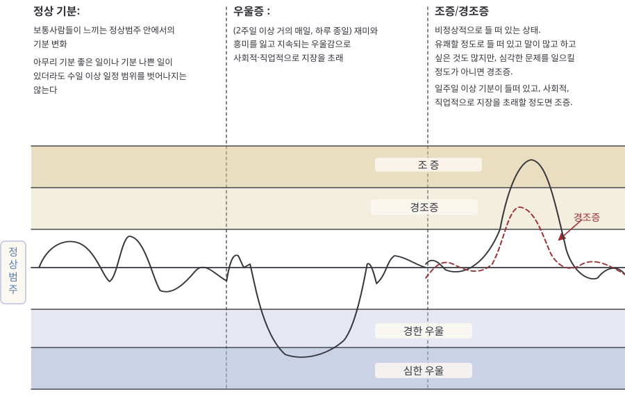
(1) 우울 삽화
우울 삽화는 기분이 우울하고 흥미가 떨어지는 시기입니다. 거의 매일 우울하고, 평소에 재미있던 일도 재미가 없습니다. 체중이 크게 줄어들거나 늘어나기도 합니다. 거의 매일 잠을 못 자거나 너무 많이 자기도 합니다. 평소와 달리 몸이 지나치게 둔하다고 느껴지고 무력감에 시달립니다. 자신이 가치가 없다는 생각, 죄책감, 죽고 싶다는 생각에 휩싸이기도 합니다. 우유부단하고 머릿속이 흐리멍덩하고 일에 집중이 되지 않습니다.
(2) 조증 삽화
조증 삽화란 비정상적으로 기분이 업되고 에너지가 넘치는 시기입니다. 자신감이 넘치고 과대 망상이 있을 수 있습니다. 잠을 안자도 피곤하지 않다고 느낍니다. 말이 많아지거나 쉴 새 없이 말하고 싶은 마음이 듭니다. 생각이 빠르게 돌아가고 이 생각에서 저 생각으로 정신없이 옮겨갑니다. 집중력이 떨어지고 사소한 자극에도 영향을 받습니다. 목표 지향적인 활동이 늘어나고 성욕이나 신체적인 움직임이 눈에 띄게 증가합니다. 위험하고 자기 파괴적인 행동에 과도하게 몰입하는 경향이 나타납니다. 예를 들면 무분별한 성관계, 쇼핑 중독, 공격적인 투자나 계획과 같은 것입니다. 기분장애 환자들은 심한 조증 삽화 시기에 있었던 일들을 잘 기억 못하는 경우가 많습니다.
(3) 경조증 삽화
경조증 삽화는 조증 삽화의 증상이 약하게 나타나는 시기입니다. 심각한 대인관계의 문제나 극단적으로 위험한 행동으로 이어지지는 않습니다. 오히려 더 생산적인 시기를 보내기도 하고, 때로는 다른 사람에게 더 매력적으로 보이기도 합니다. 그래서 스스로는 좋았던 시기로 기억하기도 합니다.
경조증의 기간은 짧고, 대부분의 환자들은 이 기간에 생활이 어렵지 않기 때문에 살아오면서 경험한 경조증을 기억하기 어려울 수 있습니다. 다음 페이지의 “한국형 양극성범주장애 진단척도 (K-BSDS)는 양극성장애 경향이 있는지 확인하는데 도움이 될 수 있습니다. 한번 직접 해보세요.
(4) 혼재 삽화
우울 삽화의 특성과 조증 삽화의 특성을 모두 가지고 있는 시기입니다. 기분 변화의 폭이 크기 때문에 환자가 느끼는 어려움이 많고, 우울 증상과 조증 증상을 함께 조절해야 하기 때문에 더욱 세밀한 치료가 필요하고, 더욱 인내심이 필요합니다.
2) 기분장애의 증상들
(1) 기분조절의 어려움: 정상 기분이란, 기분 좋은 일이나 나쁜 일이 있더라도 며칠 기분이 좋고 나쁠 뿐 며칠 이상 일정 범위를 벗어나지 않습니다. 하지만 우울증에서는 남들이 하루 정도 우울할 일을 몇 주나 몇 달씩 우울할 수 있고, 별다른 이유 없이도 우울해지기도 합니다. 사람들 마다 우울감을 표현하는 방식은 매우 다릅니다. ‘기분이 쳐진다.’, ‘답답하다.’, ‘가슴이 콱 막힌 것 같다.’, ‘아무 것도 하고 싶지 않다.’, ‘만사가 귀찮다.’, ‘예민해졌다.’, ‘짜증이 많아졌다.’, ‘화가 많아졌다.’ 라고 표현합니다. 즉, 남들은 참아 넘길 수 있는 일에 대해, 짜증이 나거나, 심지어 화가 폭발하고 남들보다 예민해지고, 주위 환경 변화에 대해 민감해지는 것이 전부 기분장애와 관련된 모습입니다.
또한, 조증/경조증 상태에서는 기분이 들뜨는 증상으로도 나타날 수 있습니다. 들뜬 기분이 때로는 일주일 이상 지속되고 몇 달이 지속될 수 있습니다. 때로는 아주 짧게 며칠 동안만 나타날 수도 있습니다. 좋은 일이 있을 때만 그런 것이 아니라, 어려운 일이 있을 때 이겨내려고 노력하면서 들뜨기도 합니다. 스스로는 기분이 들뜬 것을 느끼지 못하고, 때로는 우울증이 나았다거나, 자기 모습을 찾았다거나, 노력을 해서 성격을 바꾸었다고 생각할 수 있지만 다른 사람들이 보기에는 평소 같지 않고 부적절해 보일 수도 있습니다. 조금 들뜬 상태가 나타나면 하던 일도 잘되고 좋아진 것 같지만 대다수의 경우에는 이런 상태를 계속 유지하지 못하고 지나치게 들뜨게 되거나 기분기복이 심해지거나 심한 우울증에 빠지기도 합니다.
- 한국형 양극성범주장애 진단척도 (K-BSDS) -
다음 문장들을 잘 읽으시고 각 문장이 설명하는 내용이 당신과 비슷한지 O와 X로 표시하세요
- ① 어떤 사람들은 때때로 뚜렷하게 자신의 기분이나 에너지의 수준이 변하는 것을 알 수 있습니다.
- ② 이러한 사람들은 자신의 기분이나 에너지가 평소보다 좀 더 내려가는 때와 기분이나 에너지가 평소보다 좀 더 올라가는 때가 있다는 것을 알고 있습니다.
- ③ 기분이나 에너지가 평소보다 내려갈 때는 대개 기운이 없다고 느끼기 때문에 평소보다 누워있는 시간 또는 잠자는 시간이 늘어나고, 해야할 일도 미루거나 의욕이 떨어집니다.
- ④ 그래서, 이런 시기에 종종 몸무게가 늘어나기도 합니다.
- ⑤ 그리고, 이런 시기에 사람들은 자주“우울”하다고 느끼거나 자신이 우울하다고 얘기합니다.
- ⑥ 때로는, 이런 시기에 절망감을 느끼거나 죽고 싶은 생각이 드는 경우도 있고,
- ⑦ 직장이나 가정에서 일을 처리하고, 생활하는 능력이 떨어질 수도 있습니다.
- ⑧ 이러한 “내려가는 때”는 보통 몇 주 지속되지만, 경우에 따라서는 며칠 동안만 지속될 수 도 있습니다.
- ⑨ 이런 경우의 사람들은 자신의 기분이나 에너지가 평소와 같아서 직장이나 가정에서 일을 처리하고 생활하는데 별다른 지장이 없는 “평상시 기분일 때”가 있습니다.
- ⑩ 그렇기 때문에 “평상시 기분일 때” 와“내려갈 때”의 기분변화를 알아차릴 수 있습니다.
- ⑪ 위에서 말한 “평소일 때”보다 에너지가 증가하는 때가 있는데, 이때에는 평소인 경우라면 할 수 없었던 여러 가지 일들을 하기도 해서,
- ⑫ 때로는 이러한“올라가 있는 때”동안이면 자신이 에너지가 너무 많거나 과도하다는 것을 느낄 수 있습니다.
- ⑬ “올라가 있는 때” 가 되면 어떤 사람은 자신이 날이 선 것처럼 신경질적이거나 공격적이라고 느낄 수도 있고,
- ⑭ 어떤 사람은 이런 시기에 한번에 많은 일들을 하기도 합니다.
- ⑮ 어떤 사람은 이런 시기에 돈을 많이 써서 문제가 되기도 합니다.
- ⑯ 이런 시기에는 평소보다 말이 많아지고, 좀더 외향적이 되거나 성에 대한 관심이 증가합니다.
- ⑰ 가끔, 이런 시기 동안에 나타나는 행동이 다른 사람에게 불편을 주거나 평소 자신과는 다른 사람으로 비춰질 수 있고,
- ⑱ 이런 시기에는 동료와 함께 일을 하는데 어려움이 생기거나 문제를 일으켜 경찰서에 갈 수도 있으며,
- ⑲ 술이나 처방 없는 약물을 남용할 수도 있습니다.
그리고, 위의 내용들을 읽은 후 아래 보기 중 자신에게 해당되는 것에 표시하십시오,
(위 19개의 항목은 1개당 O표시는 1점, X표시는 0점입니다. 마지막 질문의 점수를 더해서 “양극성장애 가능성이 6점 이하-매우 낮음, 7~12점-낮음, 13~19-가능성이 있음, 20점이상-가능성이 매우 높음”이라고 해석할 수 있습니다. 하지만 단순한 설문으로 의사의 진단을 대체할 수는 없습니다.)
이러한 우울증, 조증/경조증 시기가 분명하게 나뉘어서 나타나고 그 사이에는 우울증, 조증/경조증이 없이 정상적인 기분으로 지내는 사람들도 있습니다. 그러나 어떤 사람들은 우울증, 조증/경조증 시기가 분명하게 나뉘지 않고, 그 사이에도 기분 증상이 지속되는 사람들이 있습니다. 이러한 사람들은 우울증, 조증/경조증 사이에도 약한 형태로 우울 증상이나 들뜬 기분이 나타나고 기분 변화로 인한 짜증, 불안이 함께 나타납니다. 그래서 기분장애가 있는 것이 아니라 기분이 들쑥날쑥하여 변덕스러운 성격, 쉽게 상처받는 성격을 가진 것처럼 착각하기도 합니다. 또한, 어떤 사람들은 심한 우울증 시기는 없이, 약한 우울증이 지속적으로 있는 경우도 있으며 ‘어렸을 적부터 항상 우울해왔다’, ‘원래 우울한 사람이다’라고 스스로를 표현하기도 합니다. 이러한 기분에 따른 정서반응으로 두려움, 소심함, 걱정, 불안을 느끼기도 합니다. 평소보다 사람들 앞에서 말을 꺼내기 어려워지거나, 사소한 일에도 불안해집니다. 짜증과 분노가 생겨 심하게 화를 내거나 폭력적인 행동을 하기도 하고, 사소한 일에도 갈등이 생깁니다. 이러한 정서반응은 우울할 때에도 들뜰 때에도 나타날 수 있습니다.
2) 의욕의 변화: 평소 같으면 재미있어 하고 잘하는 일인데도, 재미가 없고, 시큰둥해집니다. 만사가 귀찮고, 일이 하기 싫어서 해야 하는 일을 점점 미루게 됩니다. 한 사람과 약속을 잡고 만나기도 쉽지 않고, 아무런 계획도 떠오르지 않을 수 있습니다. 이로 인해 학생은 성적이 떨어지고, 직장인은 직장 내에서의 평가나 대인 관계에서 좋지 않은 이야기를 들을 수 있고, 부모는 육아를 제대로 수행하지 못하는 경우도 있습니다. 하지만 때로는 사소한 일에도 관심이 많아지고, 매사가 재미있고, 신나게 됩니다. 하는 일마다 잘 될 것이라는 자신감도 생기고, 밀렸던 일을 순식간에 처리하기도 합니다. 평소에는 귀찮아서 넘어가는 일들도 모두 할 수 있을 것 같아 여러가지 계획을 세우고, 여러 개의 약속을 잡기도 하고, 소비가 지나치게 늘어나기도 하며 위험성이 높은 투자를 하기도 합니다. 안정적인 상태로 심사숙고하여 진행한 일들이 아니기 때문에 나중에 문제가 생기는 경우가 많으며 많은 경우에는 다시 무기력해집니다.
수면욕, 식욕, 성욕도 변화할 수 있습니다. 변화의 방향은 사람에 따라 달라질 수 있습니다. 예를 들어, 우울해지면 식욕이 감소하는 사람이 있고, 반대로 식욕이 늘어나는 사람이 있습니다. 잠을 못 자거나 너무 많이 자는 것도 이런 이유입니다. 우울해지면 불면증이 생기는 사람이 있고, 반대로 잠만 자고 싶은 사람이 있습니다. 우울해지면 성욕이나 성기능이 저하된다고 느끼게 됩니다. 한편, 들뜨는 시기에는 밥을 먹지 않아도 배가 고프지 않을 수 있고, 잠을 자지 않아도 피곤하지 않을 수 있습니다. 또한 성욕이 항진되어 평소와 다른 이성관계를 맺기도 합니다.
3) 생각과 인지기능: 때때로 생각이 느려지고 집중력도 떨어지고 머리가 멍해집니다. 마치 바보가 된 듯한 느낌을 받기도 합니다. 책을 읽어도 머릿속에 남지 않고 TV와 영화를 봐도 이해가 잘 되지 않으며 주변인과의 대화도 빠르게 이해가 되지 않습니다. 때로는 생각의 속도가 빨라지고, 생각이 꼬리에 꼬리를 물고 연상되기도 하고, 머리가 잘 돌아가는 것처럼 느껴지고 아이디어도 잘 떠오르게 됩니다. 때로는 부정적인 생각들이 서로 연상되어 극단적인 생각에 이르기도 하고, 때로는 지나치게 긍정적인 생각이 많아지고 근거 없이 자신감에 차기도 합니다. 이러한 생각의 변화에 따라 말수가 늘어나기도 하고, 글을 많이 적기도 합니다. 드물게 강박적인 생각이 늘어나기도 합니다.
생각이 지나쳐서 ‘관계사고’가 생기기도 하고, 더 나아가서 ‘망상’에 이르기도 합니다. 관계사고는 ‘실제로는 자신과 관련 없는 일들을 자기 자신과 연관되어 있다고 생각 하는 것’입니다. 이러한 생각들이 서로 연결되어 망상으로 이어지기도 합니다. 흔한 망상의 내용으로는 “내가 다른 사람들에게 피해를 준다.”, “다른 사람들이 나를 알아보는 것 같다/신호를 보내는 것 같다.”, “내가 중요한 사람이 된 것 같다.”, “사람들이 나를 감시한다.”, “사람들이 내 생각을 아는 것 같다.”, “사람들이 나에게 관심이 있는 것 같다.”는 등이 있습니다. 이러한 증상이 심하면 조현병과 구분이 어려운 경우도 있습니다.
4) 감각의 변화: 기분변화와 동반해서 평소가 가지고 있던 질환으로 인한 통증이 더 심해지는 경우도 있습니다. 가슴의 답답함, 화병 같은 뜨거운 느낌, 열감, 화끈거림, 어지러움, 과호흡, 공황발작과 같은 감각의 변화들도 기분장애와 흔하게 동반되는 증상입니다. 질환의 상태가 심한 경우에는 망상과 더불어 환청이나 환시가 보이는 경우도 있습니다.
3. 기분 변화의 경과
1) 전형적인 우울증
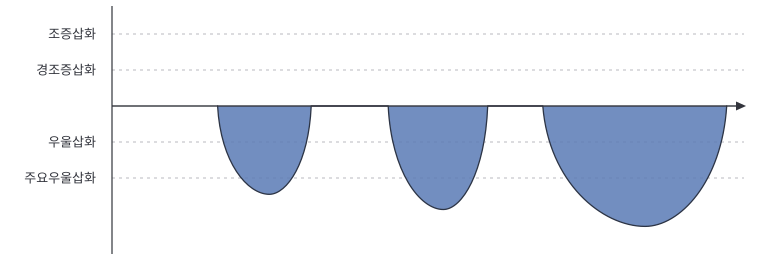
조증이나 경조증 없이 우울증만 나타납니다. 젊은 나이보다 중년 이후에 발생한 기분장애에서 흔합니다. 양극성장애 경향이 많은 환자들에 비해서 재발은 적은 편이고, 우울증 기간 사이에는 비교적 안정적이며 큰 기분기복을 느끼지 않습니다. 항우울제의 치료에도 잘 반응하는 편입니다. 한번 우울증을 경험하면 치료를 받지 않는 경우 절반 이상에서 1년 내에 다시 우울증을 경험할 만큼 재발이 흔하고, 제대로 치료를 받지 않으면 치매에 걸릴 위험이 늘어나기도 합니다.
2) 양극성장애 I형
① 삽화의 구분이 뚜렷한 양극성장애 I형
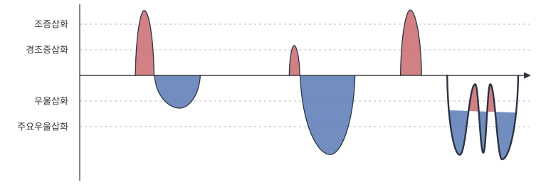
뚜렷한 조증 시기가 있는 환자들입니다. 조증 시기에는 입원을 해야 하는 경우가 많습니다. 대개는 1~2년, 수 년에 한번 나타나지만 심하면 1년에 여러 번 나타날 수 있습니다. 우울증인 기간도 있지만, 양극성장애 II형에 비해 삽화 사이 기간에 기분 변화가 크지 않고, 우울한 기간은 짧은 편입니다. 뒤에 설명할 초조우울증의 양상으로 나타날 수도 있습니다. 하지만 재발을 자주하고, 재발을 반복할수록 다시 재발하기 쉽습니다. 우울증으로 시작되는 경우도 있고, 조증으로 먼저 시작하는 경우도 있습니다. 드물게 우울증 없이 조증으로만 나타나는 경우도 있습니다. 환청이나 망상 같은 정신병적 증상을 동반하는 경우가 있으며, 그런 경우 조현병(정신분열병)과 구분하기 어려운 경우도 있습니다. 일반적으로 인터넷이나 과거 정신과 교과서에서 조울병에 대한 설명을 할 때 주로 말하는 내용이 바로 이 유형에 대한 것입니다.
② 삽화의 구분이 뚜렷하지 않고 기분기복을 동반한 양극성장애 I형
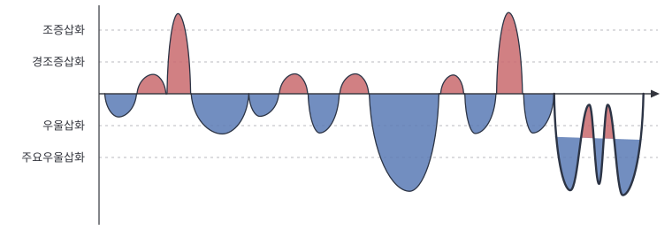
양극성장애 I형 환자들 중 일부는 삽화 사이의 기간이 깨끗하지 않고 기분기복이 지속되는 경우도 있습니다. 즉, 조증 삽화가 있어 진단은 양극성장애 I형이지만 기분기복이 심한 양극성장애 II형의 특성을 함께 가지고 있는 경우입니다. 아래에 이야기할 양극성장애 II형의 어려움들도 함께 가지고 있는 경우가 많습니다. 이 경우는 더 꾸준한 치료와 관리가 필요합니다. 이 환자들이 환청이나 망상 같은 정신병적 증상을 동반하는 경우 조현병과 구분이 어려울 수도 있습니다.
3) 양극성장애 II형
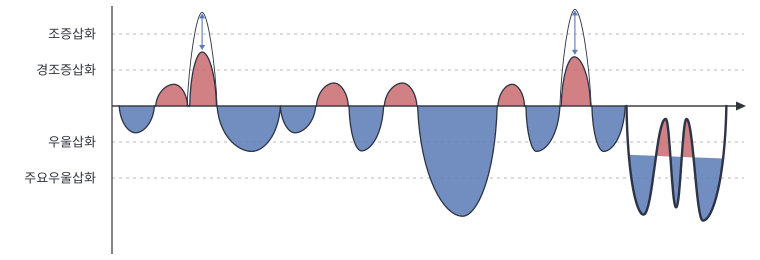
이 유형의 환자들은 조증 시기는 없지만 경조증 삽화와 주요우울삽화가 있습니다. 보통 1년에 여러 차례 나타나지만, 대부분의 기간을 우울하게 보내고 경조증 기간은 짧게 지나쳐 버려서 인식하지 못하는 경우도 많습니다. 그래서 단순한 우울증이나 성격의 문제로 진단받기 쉽습니다. 그러나 단순한 우울증보다 치료가 어렵고 반복적인 자해나 자살시도를 하는 경우가 많고, 공황장애, 식이장애, 강박장애, 외상 후 스트레스 장애, 성격장애, 음주문제 등 다양한 정신과 질환을 함께 앓고 있는 경우가 많아 더욱 세심한 치료가 필요합니다.
이 환자들은 어려서부터 기분기복을 겪어왔기 때문에 자신의 기분상태를 제대로 알지 못하는 경우가 많습니다. 또한 제대로 된 진단을 못 받고 항우울제만 복용하게 되면 기분 변화의 주기가 빨라지거나 경조증이 유발되어 점차 치료가 어려워지기도 합니다. 경조증 기간에는 주관적으로는 좋다고 느끼는 경우도 있지만, 결국 기분과 에너지의 불균형을 초래해서 경조증보다 3배 이상 긴 기간동안 우울증이 뒤따르게 됩니다. 우울증을 겪는 기간이 경조증을 겪는 기간보다 30배까지 긴 경우도 있다고 알려져 있습니다. 평범한 우울증보다 기분의 폭이 크기 때문에 주관적으로 더욱 힘들게 느끼고 충동적인 행동의 위험이 높기도 합니다. 많은 경우 아래 순환기분장애와 같이 기분기복의 특성을 함께 가지고 있기도 합니다.
4) 순환기분장애
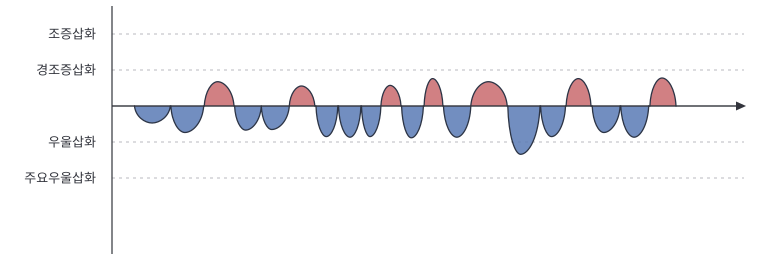
양극성 범주장애의 한가지라고 말할 수 있습니다. 지속적인 기분의 불안정. 가벼운 우울증과 가벼운 기분고양의 기간이 자주 나타납니다. 기분이 들쑥날쑥하여 변덕스러운 성격, 쉽게 상처받는 성격, 감정기복의 폭이 큰 사람으로 오인받을 수 있습니다. 이 유형은 정신과 의사라고 하더라도 기분장애를 전문으로 하는 의사가 아니면 놓치기 쉬운 병입니다. 이 병은 주로 우울증상으로 나타나기 때문에 조울병의 가능성에 대해 자세한 평가를 하지 않으면 단순한 우울증이나 성격문제로 잘못 진단되기 쉽기 때문입니다. 청소년기나 20대에 발생한 우울증 즉, 일찍 발병한 우울증이나 반복되는 우울증, 기분의 기복이 심한 우울증의 경우에는 반드시 이전에 순환기분장애가 있었을 가능성을 생각해 보아야합니다.
5) 조증/경조증 삽화 없이 기분기복을 동반한 우울증
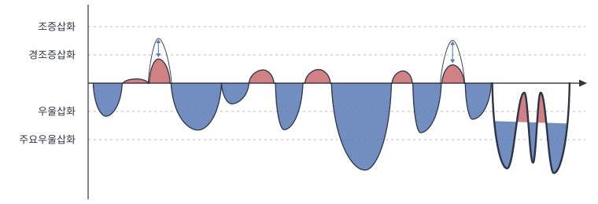
기분기복은 심하고 우울한 시기가 많은 점에서 양극성 장애 II형과 비슷한 양상을 보이지만, 양극성 장애 II형의 사람들만큼 에너지가 많지 않아 경조증 삽화가 명확하게 보이지 않는 경우입니다. 이 경우의 많은 사람들이 단순한 우울증의 치료를 받다가 낫지 않고, 오랜 시간이 걸려서 상당수는 양극성장애로 진단받게 됩니다. 또 많은 경우에 기분장애로 진단받지 못하고 성격의 문제로만 생각하여 경계선 성격장애로 진단받는 경우도 있습니다. 경조증 시기가 쉽게 발견되지 않을 뿐이지 양극성장애 II형이 가지는 대부분의 특성을 똑같이 가지고 있습니다. 오히려 자해나 자살사고의 위험이 양극성장애보다 높은 경우가 많습니다. 순환형 기질의 사람에게서 주요우울증이 발생하면 양극성장애에 준한 치료가 필요하며, 이러한 경우 들뜰 때에도 기분이 좋기보다는, 예민하고, 충동적인 행동이 동반되어‘어두운 경조증’이라고 표현하기도 합니다.
6) 초조우울증
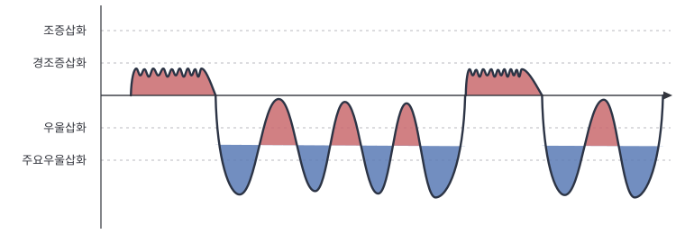
초조 우울증은 우울감, 의욕저하보다 초조, 불안이 더 두드러지는 우울증입니다. 이 사람들은 원래 기분기복을 가지고 있는 사람들은 아닙니다. 오히려 초조 우울증을 앓기 전에는 더 활달하거나 밝고 성실한 사람들이 많습니다. 하지만 큰 스트레스 이후에 빠르게 자기의 원래 모습으로 돌아가려고 억지로 기분을 끌어올리려고 하지만 그렇게 되지 않는 과정을 반복하여 일시적으로 기분기복이 심해진 사람들입니다. 그런 점에서 양극성장애는 아니지만 양극성장애와 닮은 면이 많습니다. 초조하고 긴장되고, 때로는 지나치게 말이 많아집니다. 머리 속에는 생각이 끊이지 않고, 흥분되고, 기분기복이 심하고 자주 울기도 합니다. 많은 생각에 사로잡혀 잠들기 어렵기도 합니다. 자살에 대한 생각을 갖는 경우도 있고, 우리나라 사람들은 흔히 홧병처럼 가슴이 답답하고 여러가지 통증의 양상으로 나타나는 경우도 흔합니다. 이 경우 일부 환자들은 항우울제나 안정제로는 쉽게 낫지 않고, 기분조절제나 항정신병제가 필요한 경우가 있습니다. 빠르게 나아지려는 성급한 마음이 오히려 더 증상을 악화시키는 경우가 많습니다. 참고로 이러한 양상은 양극성장애 환자의 우울 삽화 시기에도 흔하게 나타납니다.
7) 지속성 우울장애에서 동반된 우울증 (이중우울증)
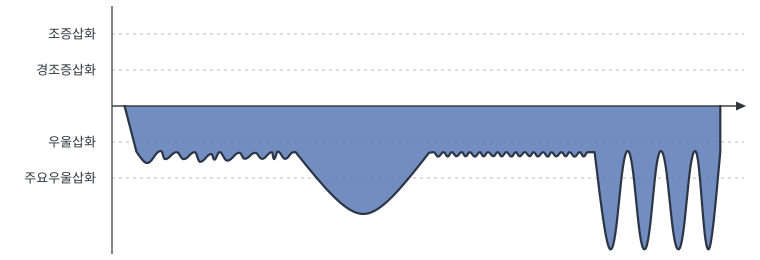
이중 우울증은 원래 약한 정도의 우울증이 있던 사람에게서 심한 우울증이 함께 나타난 경우를 말합니다. 아주 오래전부터 우울한 감정이 지속되어 오면서 자신감이 없고, 자존심도 낮고 의욕이 없고, 사교적이지 않고, 부정적인 생각이 많던 사람이 거기에 다시 또 심한 우울증이 동반된 경우입니다. 이런 환자들은 기분이 좋았던 적은 없고 계속 우울했다고 느끼고 워낙 긴 기간 증상을 경험하기 때문에 병이 아니라 성격이라고 생각하기 쉽습니다. 이러한 우울증의 경우에도 단순한 항우울제로 치료가 어렵고, 기분조절제 중 하나인 리튬을 사용하는 경우 효과가 있다고 알려져 있습니다. 이 사람들의 일부는 치료 중에 오랜 우울한 시기에 감춰져 보이지 않았던 감정기복이 나타나기도 합니다.
8) 그 외의 기분 장애의 경과
계속 우울증과 같은 경과를 보이다가 갑자기 조증을 보이며 양극성 장애로 나타나는 경우, 우울증으로 치료를 오래 받아도 지지부진하게 증상이 낫지 않고 지속되는 경우, 기분 삽화가 있을 때 기분 증상은 뚜렷하지 않고 생각, 의욕, 감각의 변화만 두드러지는 경우, 기분 증상보다 동반된 공황 발작, 강박 증상, 통증, 집중력 문제로 더 어려움을 겪는 경우 등 기분 장애는 매우 다양한 경과를 가질 수 있습니다.
4. 기분장애의 원인
1) 뇌의 기질적인 문제
① 기분조절회로의 문제
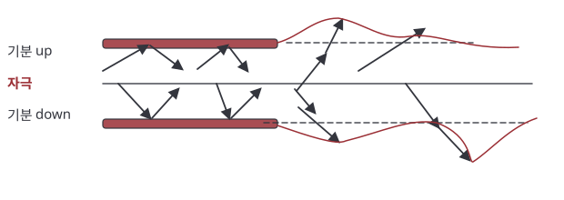
기분장애는 환경적인 요인 외에 체질적인 요인이 50~60%에 이르는 생물학적 질환입니다. 뇌에는 기분을 조절해 주는 기분조절회로가 있습니다. 이 회로는 자극의 종류에 따라 적절한 기분을 경험하게 해줄 뿐만 아니라 적당한 정도로 기분을 느끼도록 해주는데 이 기분조절회로가 느슨해지면 기분이 정상범위를 벗어나 지나치게 들뜨거나 우울해지게 됩니다.
② 뇌 신경세포 활성도나 신경전달물질의 비정상적인 증가나 감소로 인한 기분과 에너지의 불균형
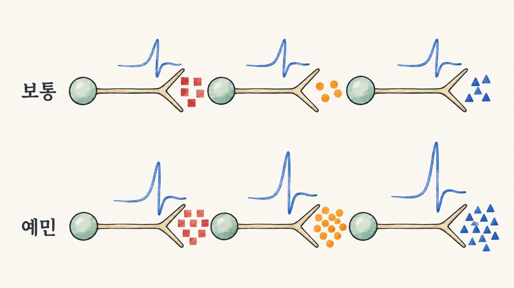
뇌 내에 기분과 에너지를 조절하는 신경전달물질이 균형을 이루어서 기분과 에너지, 의욕을 조절하고 있습니다. 이러한 신경전달물질의 균형이 깨지면 기분과 에너지의 불균형을 초래하여 기분장애가 발생하게 됩니다. 그 외 면역체계, 뇌신경전달 단백질 등이 질환의 발병에 관여한다고 알려져 있습니다.
2) 신경세포와 신경전달 물질의 활성도에 영향을 주는 요인
① 호르몬 변화: 호르몬의 변화가 심한 사춘기, 임신, 출산 후, 갱년기 등에서 기분장애가 처음 나타나거나 재발하기 쉽습니다.
② 햇빛: 햇빛은 수면을 조절하는 멜라토닌, 그리고 기분을 조절하는 세로토닌의 생성에 영향을 미칩니다. 초봄과 늦가을에 기분장애 환자의 재발이 더 많은 것은 급작스러운 일조량의 변화와 관련이 있습니다. 햇빛이 줄면 기분이 우울해질 수 있지만, 반대로 햇빛을 많이 쬐게 되거나 인공으로 햇빛을 대체하는 광치료를 하게 되면 기분과 의욕이 좋아질 수 있습니다.
(분당서울대학교병원 기분장애 클리닉에서는 이러한 유전적인 요인, 뇌 활성도의 변화에 대해 연구하고 있습니다. 유전연구, 뇌파연구, 뇌영상연구 등에 참여를 원하시면 담당 의사와 상의하시면 됩니다.)
3) 심리적, 사회적 요인
자존심이 강하거나 완벽주의적 성격, 대인관계의 스트레스, 갑작스러운 충격 (사직, 사별, 파산 등), 기타 만성적인 스트레스 등이 기분장애 증상의 발생 및 재발에 영향을 줄 수 있습니다. 본래 기분장애가 발병하기 쉬운 기질이 있을 때 심리적, 사회적 요인이 병을 생기도록 할 수 있습니다.
5. 기분장애와 기질 (temperament) 및 성격 (personality)
기질이란 개인이 가지고 있는 전반적인 감정의 특성을 말하며, 생각, 감정, 인지, 행동 그리고 다른 사람과의 관계에 일관된 영향을 끼치게 됩니다. 주로 타고난 기질은 평생 유지된다고 알려져 있으나, 양육 환경 등 환경적 요인에 영향을 받기도 합니다. 특정 기질을 가지고 있는 경우 기분장애의 발병율이 높다는 연구결과도 있고, 단순히 기질적 문제로만 알고 있다가 정신과 전문의의 진료 후 기분장애로 확인되는 경우도 있습니다.
같은 기분장애를 진단받아도, 기질에 따라 드러나는 증상이 다를 수 있습니다. 기분조절이 어려운 기질을 가지고 있는 경우 정서적 불안정성으로 인해 거절이나 비판에 민감하고, 정서적으로 타인에게 의존도가 높으며, 질투심이 강하고 다른 사람을 기쁘게 하고 싶다는 욕구가 강합니다. 자기 자신에 대한 태도도 매우 달라져 어떤 때에는 자신감이 들다가도 어떤 때에는 아무 가치가 없는 사람처럼 느껴지기도 합니다. 충동적으로 폭음, 폭식이 반복되기도 하고, 물질 남용의 위험이 높습니다.
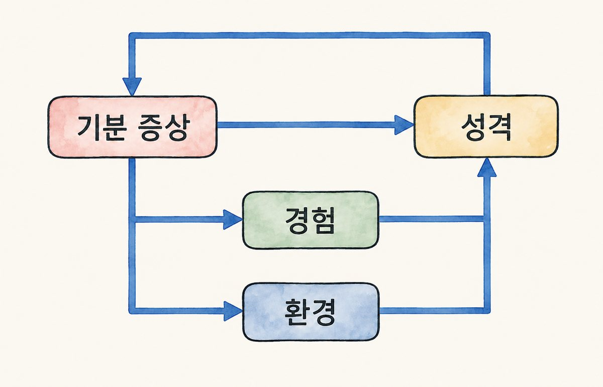
기분장애의 증상은 오랜 시간에 걸쳐 성격처럼 굳어질 수 있습니다. 특히 어린시절부터 기분장애를 앓아온 경우 그렇습니다. 예를 들면, 들뜨는 시기에 사람들에게 쉽게 다가가다가 거절과 같은 작은 자극에도 우울해지는 경험이 쌓이면 대인관계에 민감한 성격이 되고, 사람을 믿는 것이 힘들어져 대인관계가 제한적인 환경에서 지내게 될 수 있습니다. 이러한 환경이 자신의 성격을 만들고, 그러한 성격이 다시 기분장애를 악화시킬 수도 있습니다.
다른 예를 들면 기분이 들뜨는 시기에 자신에 대해 이상적인 모습을 기대하다가, 우울해지는 시기에 그런 이상적인 자기 모습과 너무 다르다고 좌절하여 소심해지거나, 그러면서도 근거없이 자신감을 갖게 되거나, 자기가 생각하는 이상적인 모습에 대해 과도하게 집착하는 성격이 될 수 있습니다. 이렇듯 기분 장애와 성격은 밀접하게 연관되어 있습니다. 약물 치료를 받고 기분 증상이 나아지더라도 그동안 증상의 영향이 쌓여왔던 성격은 쉽게 변하지 않을 수 있습니다. 성격적인 문제가 나아지기까지는 많은 시간이 필요하고, 상담 치료를 병행해야 할 수도 있습니다.
6. 기분장애의 치료와 경과
1) 기분장애는 꼭 치료를 해야 하나요?
기분장애는 반드시 치료를 해야 합니다. 치료하지 않으면, 기분조절이 점점 더 어려워지게 되기 때문입니다. 우울증은 치료하지 않고도 어느 정도 시간이 지나면 호전이 되는 경우도 있으나, 거의 대부분의 경우 다시 우울해지게 되는데, 재발이 반복될수록 우울해지는 횟수가 점점 많아지고, 우울한 기간이 더 늘어날 수 있습니다. 결국, 지금 치료하지 않으면, 나중에 더욱 어려움을 겪으며 더 오랜 기간 동안 더 힘든 치료를 받게 됩니다.
2) 일반적인 치료경과
치료를 시작한다고 해도 증상이 순식간에 없어 지진 않습니다. 오랜 시간에 걸쳐 나타났던 증상이기 때문에 꾸준히 조금씩 나아지지만, 인내심을 가지고 포기하지 않으면 분명히 나아질 수 있습니다.
치료를 하는 동안 몇 번의 재발을 겪을 수도 있지만, 재발의 빈도가 치료하기 전에 비해서 점점 줄어들게 됩니다. 우울하더라도 이전보다 덜, 그리고 더 짧은 기간 우울할 수 있습니다. 이런 과정을 지나게 되면 모든 증상들이 회복되고 병으로 힘들어지기 전처럼 회복됩니다.
기분변화가 줄어드는 과정에서 들뜬 상태가 줄어들고 감정이 무뎌진 것 같은 느낌, 의욕이 없는 느낌, 약간의 우울한 느낌이 있을수도 있습니다. 점점 차분해진 감정에 적응을 해나갈수록, 시기에 따라 적절히 약물을 조정할수록 더욱 편한 상태에 도달할 수 있습니다.
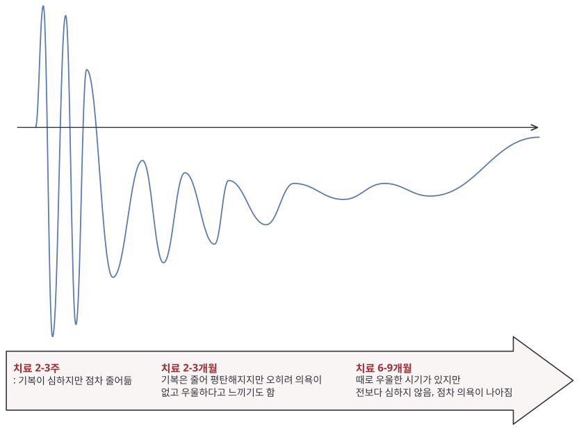
- 2~3주 후: 약물이 뇌에서 신경생물학적인 변화를 일으켜 비로소 좋아지기 시작합니다. 즉, 약을 복용하여도 2-3주 내에는 호전되지 않는 경우가 많습니다.
- 2~3개월 후: 증상이 눈에 띄게 좋아집니다. 오히려 의욕이 없다고 느낄 수도 있고, 그게 우울하다고 느낄 수도 있지만 기분의 폭이 줄고 안정된 느낌을 갖게 됩니다.
- 6-9개월 후: 많이 안정이 되나, 경미한 증상은 남아 있을 수 있습니다. 꾸준히 치료를 받고 생활관리를 하더라도 때때로 어려움을 느끼지만 이전만큼 심해지진 않습니다.
- 1-2년 후: 좋아졌다고 생각할 만큼 호전됩니다.
3) 기분장애를 치료하지 않을 경우 문제
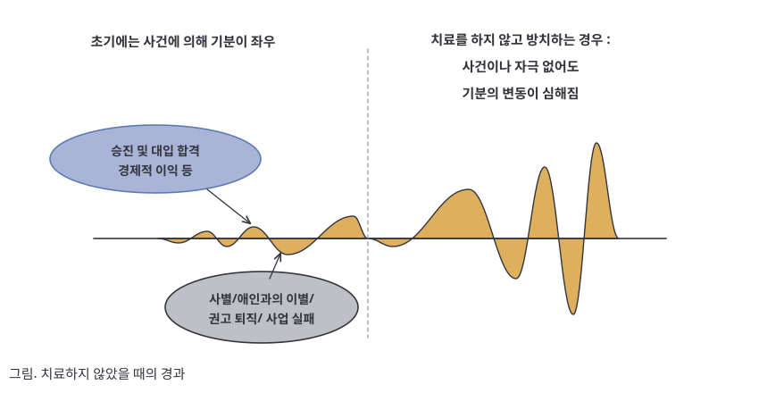
- ① 치료가 더욱 어려워짐: 기분장애는 조기에 발견해서 조기에 치료하는 것이 매우 중요합니다. 병이 오래되고 심할수록, 치료 기간이 길어지게 될 수 있습니다. 또한 병의 초기에 효과가 있었던 약이 재발이 반복되는 경우 나중에는 효과가 떨어지는 경우도 발생합니다.
- ② 대인관계의 문제: 기분이 우울할 때에는 사람들을 만나는 것이 힘들고, 대인관계에서 상처를 잘 받지만 반대로 기분이 들뜬 경우에는 지나친 자신감으로 부적절하게 나서거나 오버를 하기도 합니다. 이러한 문제들이 반복되게 되면 사회성이 떨어지고 게으르거나 변덕이 많은 사람으로 오해를 받게 됩니다.
- ③ 인지 기능의 손상: 병의 잦은 재발로 인해 병을 앓는 기간이 길어질수록 기분조절회로를 구성하는 신경세포들이 손상을 입는데, 특히 인지 기능과 관련된 세포들이 영향을 받아 기억력이 감퇴될 수 있습니다. 흔히 오해하는 것과 달리 우울증 약이 아니라 우울증 자체가 치매의 위험 요소입니다. 우울증을 치료하는 것은 오히려 치매로 진행하는 것을 막는데 도움이 됩니다.
4) 유지치료의 중요성
유지치료를 하지 않으면 대부분 재발하며, 재발을 반복할수록 치료기간은 길어집니다. 즉 약을 억지로 줄이고 끊으려고 할수록 약을 먹는 기간을 더 늘어나게 됩니다.
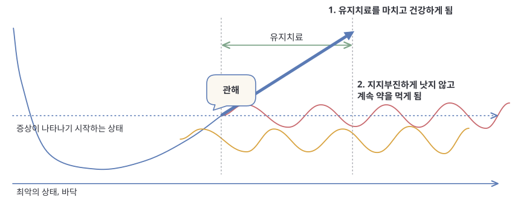
많은 환자들이 언제까지 치료를 받아야 하는지 궁금해합니다. 하지만 치료 기간을 정하기 위해서는 먼저 증상이 없는 상태 (관해 상태)에 도달해야 합니다. 관해 상태에 도달하기 전에 치료를 중단하거나 소홀하는 경우, 관해 상태에 도달하자 마자 유지치료 없이 치료를 중단하는 경우에는 병이 지지부진하게 낫지 않고, 계속 약을 먹게 됩니다. 증상이 없는 채로 꾸준히 유지해서 유지치료기간을 무사히 마치면 약을 끊고도 건강할 수 있는 시기가 옵니다. 이러한 유지치료 기간은 기분장애가 얼마나 심했는지, 얼마나 자주 재발했는지, 위험한 상태에 이르게 될 정도였는지, 일찍 발병했는지, 가족력이 있었는지 등 여러가지 상황을 고려해서 담당 의사와 함께 결정해야 합니다.
| 우울증 및 양극성 장애 1형에서 통상적인 유지치료 기간의 예 | ||
|---|---|---|
| 유지치료를 하지 않을 시 1년내 재발 확률 | 재발을 막기 위해 필요한 유지치료 기간 | |
| 첫번째 기분 삽화 발생시 | 약 50% | 1년 |
| 두번째 기분 삽화 발생시 | 약 80% | 3년 |
| 세번째 이상 기분 삽화시 | 약 90% | 평생 |
7. 기분장애의 치료의 종류와 이해
당뇨병의 치료에 약물치료와 함께 식이요법, 운동요법과 가족의 협조가 필수적인 것처럼 양극성장애의 치료에도 약물치료와 함께 규칙적인 생활 등 일상생활 관리, 스트레스 관리 등 심리사회적 치료와 가족의 협조가 필수적입니다. 특히 어느 정도 이상의 증상을 보이는 경우 자신의 의지 만으로는 조절되지 않습니다. 기분장애는 급성 증상을 치료하는 것도 중요하지만 궁극적으로는 재발을 방지하고 정상적인 생활을 영위하는 것이 치료의 목표라고 할 수 있겠습니다.
1) 약물치료
앞서 언급한대로 양극성장애는 뇌기능의 장애로 생기는 질병으로, 약물치료가 가장 중요합니다. 약물치료는 크게 신경세포의 활성도를 조절하는 약물(기분조절제)와 신경전달물질의 균형을 맞추어 주는 약물로 구분할 수 있습니다.
① 기분장애에서의 약물의 종류
기분조절제: 조증과 우울증에 모두 도움이 되는 약입니다. 신경세포의 활성도를 조절하는 약을 쓰면 제일 잘 낫는 병이 간질이어서 이 약들의 일부는 항경련제로 이름 붙여져 있습니다. (예, 리튬, 데파코트, 라믹탈, 카바마제핀 등)
신경전달물질의 균형을 맞춰 주는 약: 주로 도파민과 세로토닌의 균형을 조절하여 증상을 치료합니다. 기분조절제와 마찬가지로 조증에 더 효과가 좋지만, 우울증 치료에도 중요한 역할을 합니다. 이러한 약들을 쓰면 제일 잘 낫는 병이 정신병이고, 정신병적 증상을 동반하는 경우 큰 도움이 되어 ‘항정신병약물’로 이름이 붙여져 있지만, 꼭 정신병에만 사용하는 것은 아닙니다. 때로는 수면에 도움이 되기도 하고, 잘못된 생각을 줄이는데도 도움이 됩니다. (예, 자이프렉사, 세로켈, 리스페달, 솔리안, 클로자릴, 아빌리파이 등)
항우울제: 주로 우울증을 치료하기 위해 쓰이는 약입니다. 우울한 기분을 나아지게 하고, 때로는 식사와 수면에 도움을 줍니다. 양극성 장애의 기질이 있는 사람들은 주의해서 사용해야 합니다. (예, 렉사프로, 팍실, 프로작, 웰부트린, 레메론 등)
안정제: 급성기의 불안, 불면 증상을 조절하는 약물입니다. 안정제를 많이 복용하고 끊지 못하는 경우는 대부분 위에 이야기한 치료제가 충분히 조절되지 않았기 때문입니다. 증상이 심할 때에는 안정제를 복용하는 것이 도움이 되지만 안정제에 의존하게 되는 것은 피해야 합니다 (예, 로라반, 아티반, 자나팜, 자낙스, 바륨, 디아제팜, 데파스 등)
② 기분장애 약물의 흔하진 않지만 중요한 부작용
흔한 감기약이나 소화제도 부작용이 있듯이 기분장애에서 사용하는 약물들도 부작용이 있을 수 있습니다. 최근에 사용하는 정신과 약물들은 사람들의 편견과 달리 오래 사용해도 안전하도록 만들어져 있지만, 아래와 같은 특징적인 부작용들을 숙지할 필요가 있습니다.
■ 좌불안석 (=정좌불능증)
안절부절 못하고, 가만히 있지 못하며, 서있거나 앉아 있을 수가 없고, 몸을 흔들거나 앉기와 서기를 반복하며 몸을 전후좌우로 흔들기도 한다. ‘항정신병약물’의 부작용으로 드물게 나타날 수 있습니다. 좌불안석이 기분장애의 증상일 수도 있기 때문에 세밀한 평가가 필요합니다. 이 부작용이 나타난 경우 해당 부작용을 유발하는 약물을 감량하거나 인데놀, 로라반, 리보트릴과 같은 약을 사용하여 부작용을 줄일 수 있습니다.
■ 급성 근육긴장이상
‘항정신병약물’의 드문 부작용으로 근육이 강하게 수축을 하면서 통증이 나타나는 경우입니다. 이 경우 해당 약물을 줄이거나 이런 부작용을 줄일 수 있는 약물을 같이 사용하게 됩니다.
■ 고프로락틴혈증 (월경불순, 무월경, 유방 통증, 유즙 분비)
일부 ‘항정신병약물’이 유즙분비 호르몬의 농도를 올려 마치 모유수유 시기에 생리를 하지 않는 것처럼 생리양이 줄거나 생리가 멈추거나 늦춰지는 경우가 있습니다. 때로는 모유수유 시기처럼 유즙 분비가 나타나기도 합니다. 증상이 심하다면 이러한 부작용에도 불구하고 약을 지속해서 사용해야할 수밖에 없지만, 기분 증상이 나아지고 나면 약을 감량하거나 다른 약으로 바꾸어서 이런 부작용을 조절할 수 있습니다.
■ 체중증가
많은 기분 장애 환자들이 식욕 변화와 폭식을 증상으로 경험합니다. 때로는 병의 증상이 아니라 약물에 의해서 체중이 늘어나는 경우도 있습니다. 증상이 심하다면 식단 조절과 운동을 병행하면서 그 약물을 사용할 수밖에 없고, 증상이 나아지고 나서 체중증가 부작용이 있는 약들을 조절할 수 있습니다. 체중증가를 억지로 조절하기 위해 식욕억제제를 담당 의사가 상의하지 않고 복용하는 경우 기분 증상을 더욱 악화시킬 수 있어 주의가 필요합니다.
■ 변비
어떤 약들은 장에서 수분 분비를 줄여서 변비를 일으킬 수 있습니다. 섬유소가 많은 음식을 먹고 수분을 하루 900cc 이상씩 마시고 아침 식사 후 화장실에 가는 습관을 만들고 적당한 운동이 필요합니다. 그럼에도 변비가 지속될 경우, 변비약을 복용하는 것이 도움이 됩니다.
■ 피부발진
라믹탈, 데파코트, 카바마제핀과 같은 약물이 드물게 피부발진을 일으킬 수 있습니다. 붉은 좁쌀 모양으로 피부 어디서든 시작할 수 있습니다. 대부분 원인 약물을 끊으면 나아지지만 발진을 무시하고 약을 계속 복용하는 경우 매우 드물게 피부 괴사와 같은 심각한 부작용으로 이어질 수 있습니다. 발진이 의심되면 의사와 상의할 수 있게 사진을 찍어 두고, 근처 피부과 진료를 보거나 외래나 응급실에 연락하여 상의하는 것이 좋습니다. 발진이 확실하다고 생각되면 라믹탈과 같이 원인이 될 수 있는 중단해야 합니다.
■ 여드름 및 탈모
심한 정도로 나타나는 경우는 드물지만 몇몇 약물은 여드름과 탈모 증상이 있을 수 있습니다. 여드름이 나타나는 경우 피부과 치료를 병행하는 게 좋습니다. 평소 피부를 깨끗이하고, 세수할 때 세안제를 깨끗이 씻어내고, 스킨, 로션, 수분 크림으로 피부 산성도를 맞춰주는 것이 필요합니다. 탈모가 지속되어 문제가 되는 경우는 드뭅니다. 아연과 철분 등의 영양분을 충분히 공급해주는 것이 도움이 될 수 있습니다.
■ 손떨림
평소 가지고 있던 손떨림이 약물을 복용한 후 더 심해질 수 있습니다. 긴장되거나 손떨림을 신경쓰면 더 심해지기도 합니다. 급성기 증상이 완화되고 나면 약물 용량을 줄일 수 있고, 점차 줄어들 수 있습니다. 인데놀과 같은 약물이 손떨림을 줄이는데 도움이 될 수 있습니다.
■ 수면행동
졸피뎀(스틸녹스)나 안정제를 복용하고 기억하지 못하는 행동을 하는 부작용이 있을 수 있습니다. 폭식을 하거나 엉뚱한 통화를 하는 경우도 있고, 넘어져서 크게 다치는 일이 있을 수도 있습니다. 졸피뎀(스틸녹스)를 복용하는 경우 최소 용량으로 복용하고, 주의하여 보관하고, 수면행동이 발생하는 경우 담당의사와 꼭 상의해야 합니다.
■ 혈액 및 심전도 검사 상 이상 (간 기능, 신장 기능, 갑상선 기능, 췌장 기능, 전해질 수치 등)
기분장애에서 쓰이는 약물들도 다른 약물들과 마찬가지로 간과 신장에서 분해되고, 여러 장기에 작용하기 때문에 특별한 증상 없이도 혈액이나 심전도 검사에서 이상 소견이 나타나는 경우가 있을 수 있습니다. 이상을 방치하는 경우 해당 장기의 문제가 생기고 증상이 나타날 수도 있습니다. 그래서 의사의 권유에 따라 정기적으로 검사가 필요합니다.
③ 약물치료시 주의할 점
병의 증상은 기복을 보이지만 치료는 기복을 보여서는 안됩니다.
치료가 잘 진행되고 있다고 하더라도 초기에는 증상의 기복들이 나타날 수 있습니다. 치료를 통한 회복의 과정은 점차적으로 이루어지며 악화와 호전을 반복하다 점차 증상이 완화되는 양상을 보이는 경우가 많습니다. 또한 증상이 호전된 경우에 병이 다 나았다고 생각해서 치료를 중단해서도 안됩니다.
증상을 참고 약의 용량을 억지로 줄이려고 하면 결국 더 오래 많은 약을 먹게 됩니다.
치료를 종결하기 위해서는 증상이 없는 ‘관해’상태에 도달하고, 그 상태를 ‘꾸준하게 유지’해야 합니다. 증상은 지속되고 있는데 억지로 약을 줄이려고 하면 관해 상태에 도달하지 않으니 더 오래 약을 먹게 됩니다. 그 사이에 증상이 악화되면 더 치료가 어려워지고 결국 더 많은 약을 먹게 됩니다. 꾸준히 정해진 용량을 복용하고 나면 증상이 나아지고, 그 후에는 다시 약을 조정할 수 있습니다.
병의 증상과 약물의 부작용을 혼동해서는 안됩니다.
부작용이 없으면서 본인에게 효과가 있는 약을 잘 찾는 것이 중요합니다. 따라서 의사들도 약물 부작용에 대해 관심을 가지고 조절하려고 합니다. 하지만 병의 증상과 약물의 부작용이 비슷한 측면이 있어 혼동을 일으킬 수 있습니다. 예를 들어보면, 과수면 증상이 있는 우울증 환자에게 졸릴 수 있는 약물을 처방하게 되면, 저녁 투약 후 아침에 일어나기가 힘들고 낮 동안에 졸리는 문제가 생겼을 때 약 때문인지 우울증상 때문인지도 구별하기가 쉽지 않을 수 있습니다. 하지만 졸림 증상이 없는 약물인데도, 약을 먹고 나서 아침에 일어나기 힘들다고 호소하며 약물의 부작용으로 오해하는 분들도 있습니다. 아마도 이런 경우는 약에 대한 불안감이 많은 환자들의 경우 몸에 나타나는 변화를 병의 증상으로 이해하기 보다는 약의 부작용으로 인식하게 되어 발생하는 문제일 수 있습니다.
| 병의 증상으로 생각할 수 있는 경우 | 약물 부작용으로 생각할 수 있는 경우 |
|---|---|
| 1. 병의 증상으로 이미 알려진 경우 2. 우울하거나 처질 때 심해지는 증상 3. 심했다가 심하지 않았다가 하는 기복이 있는 증상 | 1. 약을 먹기 전에는 없었는데 먹고 난 이후에 처음 발생 2. 약을 먹은 이후에 심했다가 이후 점점 나아지는 증상 3. 약을 먹고 나면 비슷한 시간에 매일 나타나는 증상 4. 약을 줄이거나 먹지 않았을 때 사라지는 증상 5. 복용하는 약의 부작용이라고 이미 알려진 증상 6. 병의 증상으로 알려져 있지 않는 증상 7. 진찰이나 혈액검사 등 객관적인 평가로 부작용으로 판단되는 증상 |
병에 대한 이해와 치료에 대한 충분한 이해가 필요합니다.
어떤 환자들은 병이 스트레스 때문이었다고 말하며, 약물치료 보다는 스트레스 해소가 더 중요하다고 말하기도 합니다. 스트레스가 있으면 증상을 악화시키는 요인이 되고, 또한 체질이 약한 사람에게 병을 유발하는 인자가 될 수는 있지만, 스트레스가 병의 원인이라고 말할 수는 없습니다. 스트레스의 관리가 치료에 있어 중요한 부분이기는 하지만, 스트레스만 관리해서는 병이 치료가 된다고 볼 수는 없습니다. 충분한 약물 치료를 해야 기분조절회로를 튼튼하게 만들 수 있고, 병의 재발을 막을 수 있다는 점을 이해하는 것이 중요합니다. ‘약물치료’와 ‘스스로의 노력’, 두가지 모두가 아닌 어느 한가지 만으로는 절대 병을 극복할 수 없습니다.
④ 약을 먹는데도 재발할 수 있나요?
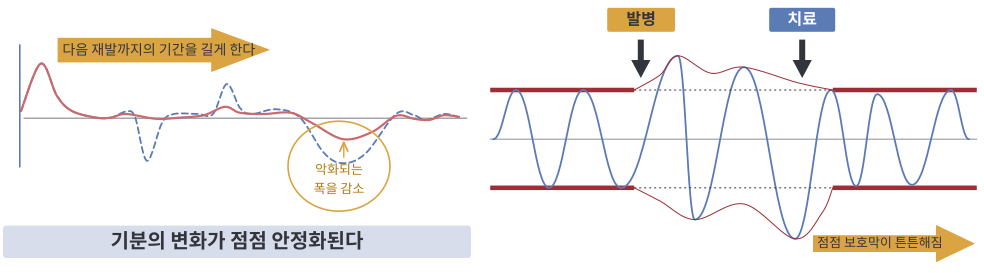
약물치료 중에도 병이 충분히 치료되기 전에는 재발할 수 있습니다. 하지만, 약물 치료가 적절히 이루어지고 있다면 재발의 횟수, 기간, 정도가 줄어들게 됩니다. 즉, 재발하더라도 이전만큼 나빠지는 경우는 드물고, 재발에 적절히 대처한다면 전반적인 치료 경과를 오히려 호전시킬 수도 있습니다. 재발을 염려하기보다는, 적절하게 대처하는 방법을 배우는 것이 중요한데, 이를 위해서는 재발의 전구증상 (우울증이나 조증/경조증이 본격적으로 시작되기 전에 보이게 되는 초기 증상)을 이해하는 것이 중요합니다.
재발의 전구증상은 환자마다 다릅니다. 자신에게 해당하는 재발의 전구증상이 무엇인지를 이해하게 되면 재발의 위험을 빨리 감지할 수 있고, 이 시기에 더욱 적극적으로 치료해서 재발을 막을 수 있게 됩니다. 특히 기분기록지를 꾸준하게 적는 것은 재발 증상을 빨리 알고 대처할 수 있는 가장 좋은 방법입니다.
| 조증/경조증의 초기 증상 | 우울증의 초기 증상 |
|---|---|
|
|
⑤ 약을 복용하는 동안 생길 수 있는 질문
약 먹는 시간은 언제가 좋은가요?
정신건강의학과에서 사용하는 대부분의 약은 공복 시에 먹어도 상관이 없습니다. 주로 졸리는 특성이 있는 약은 저녁에 먹고, 잠을 깨게 하는 효과가 있는 약은 아침에 먹게 됩니다. 중요한 것은 본인이 약을 챙겨 먹기 편한 시간에 규칙적으로 약을 먹어 혈액 속 약물 농도를 일정하게 유지하는 것입니다. 의사가 약의 복용 시간 및 방법을 따로 얘기한 경우에는 그 시간을 지켜 주십시오. 때로는 매스꺼운 부작용이 심한 경우에는 식사 도중에 약을 복용하면 훨씬 나을 수도 있습니다.
대부분의 약은 복용하기 쉽게 “자기 전”에 복용하도록 처방됩니다. 그러나 생활이 불규칙해서 새벽 늦게 잠드는 습관이 있는 경우 새벽에 잠들기 전에 약을 복용하는 것보다 정해진 시간 (밤 9시-10시)에 복용하고 일찍 잠들고 일찍 일어나서 규칙적인 수면을 취하는 것이 좋습니다.
야근을 하는 경우나 해외 여행을 하는 경우에는 언제 약을 먹어야 하나요?
퇴근 후 잠을 자기 전에 약을 드시는 것이 좋겠으나, 근무시간이 밤낮으로 바뀌는 경우에는 의사와 상의하십시오. 대부분의 경우 자기 전 약은 시간과 관계없이 가장 길게 자기 전에 먹으면 됩니다. 해외여행의 경우, 현지 시간을 기준으로 일정한 시간에 약을 먹으면 됩니다. 예를 들어 한국에서 저녁 10시에 약을 먹었다면, 해외 현지시간으로 저녁 10시에 약을 드시면 됩니다. 이외에도 특수한 상황이 발생하면 반드시 치료하는 의사와 상의하십시오.
약을 복용하는 시간을 놓쳤을 때는 어떻게 해야 하나요?
약을 복용하는 시간을 놓친 경우라면 가능한 빨리 약을 드시는 것이 좋습니다. 일부 졸리는 효과가 있는 약을 아침 출근시에 먹는 것은 문제가 될 수 있으므로, 자신이 복용하는 약에 대해서 기본적인 특성들을 교육받을 필요가 있습니다.
약물 치료를 하는 경우 다른 약은 어떻게 해야 하나요?
여러 약을 함께 사용하는 경우에는 약물상호작용에 의해 약물의 농도가 변해 치료효과가 떨어지거나, 부작용이 나타날 수 있습니다. 단기간 복용하는 감기약이나 진통제, 영양제 등은 대부분 큰 문제가 없지만, 사용하는 약물을 의사가 알고 있어야 약물 치료가 더 적절하게 이루어질 수 있으므로, 치료하는 의사에게 복용중인 약물을 알려주세요. 또한 한약을 먹는 경우에도 의사에게 알려주세요.
술을 마셨을 때는 약을 먹어야 하나요?
약을 먹기 전에 술을 마신 경우라도 약은 먹어야 합니다. 술을 많이 마신 경우에는 술이 약물의 농도에 영향을 줘서 졸림 현상이 더 많이 나타날 수 있지만, 술을 마신다고 약을 거르기 시작하면 치료가 성공할 수 없습니다. 약을 먹기 위해 술을 끊거나 적게 마시려는 노력이 필요합니다.
약물이 부족한 경우에는 어떻게 해야 하나요?
외래 예약을 놓치거나 약물을 분실한 경우, 주치의 외래를 예약하기 어렵다면 근처 정신건강의학과에 처방전을 가지고 방문하거나 분당서울대병원의 다른 의사의 외래라도 빨리 예약해서 약물처방을 받으셔야 합니다. 갑자기 약을 중단하면 부작용을 경험할 수 있습니다. 평소에 처방전을 사진으로 찍어 두면 이런 경우 다른 병원에서 약을 처방받는데 도움이 될 수 있습니다.
임신 계획 중인데 먹어도 되나요?
임신 및 출산 시기는 호르몬 포함, 신체적/정신적인 변화로 인해 기분의 변동성이 큰 시기이므로, 기분증상이 안정적인 상태에서 임신을 시도하는 것이 매우 중요합니다. 임신 계획 시기부터 의사와 상의하여 증상에 따라 약물을 중단하거나, 약물 용량을 불가피하게 줄이고 상담치료를 병행하거나, 보다 안전하다고 알려진 약물로 변경하기도 합니다. 또한, 기분 증상이 심각하여 약을 복용하는 것이 환자와 태아에게 더 안전한 경우 환자 및 보호자와 충분한 상의 후 투약을 유지하는 경우도 있습니다. 언젠가 임신을 준비한다면 무엇보다 지금 치료를 잘 받아서 임신 시기에 안정된 상태를 만드는 것이 중요합니다. 엽산과 같은 영양성분을 임신계획 때부터 미리 보충해주는 것도 도움이 됩니다.
⑥ 약물치료에 대한 몇 가지 오해와 진실
| Q1 정말 약으로 마음을 고칠 수 있나요? |
|---|
| 약으로 마음을 고치기도 합니다. 몸과 마음은 긴밀하게 연결되어 있습니다. 몸이 아프면 마음이 힘들고, 반대로 마음이 힘들면 몸이 아픕니다. 마음이 약해진 것은 뇌의 변화를 반드시 동반합니다. 뇌의 변화는 약물치료로 회복시킬 수 있습니다. 뇌의 변화를 치료하지 않으면 아무리 마음을 강하게 먹는다고 해도 병을 잘 고칠 수가 없습니다. |
| Q2 약의 개수가 많아지면 병이 심한 건가요? 약의 종류가 많아지면 병이 심해진 건가요? |
| 반드시 그런 것은 아닙니다. 약의 개수나 용량은 대부분 약물을 대사하는 개인의 능력 차이에 의해 결정되는 것입니다. 또 병의 특징에 따라 약의 종류가 결정됩니다. 종류가 늘어난다고 해서 병이 더 심하다는 뜻은 아닙니다. 약이 늘어난다고 약을 더 끊지 못하게 되는 것이 아니라, 증상이 좋아지지 않기 때문에 약을 줄이지 못하는 것입니다. 약을 잘 조절해서 증상을 줄이는 것이 치료를 잘 마치는 방법입니다. |
| Q3. 그래도 약에 의존하게 되지 않을까요? |
| 약에 의존하게 되는 것이 아닙니다. 약물 치료의 도움을 받아 병을 회복하게 되면, 약이 없이도 잘 지낼 수가 있습니다. 병이 충분히 회복되지 않았을 때에는 약을 먹지 않으면 다시 나빠지기 쉽습니다. 따라서 충분히 회복될 때까지는 단지 약이 필요해서 선택할 따름입니다. |
| Q4. 약을 오래 먹으면 중독되는 것이 아닌가요? |
| 기분조절에 사용하는 약은 중독성이 전혀 없습니다. 끊기 어려운 약들이 아닙니다. 정신과 약물 중에서 일부 신경안정제라 불리는 계통의 약이 의존성이 있지만, 의사의 처방을 따라 주의해서 사용하면 의존하지 않을 수 있습니다. 기분조절에 쓰이는 약이 효과적으로 조절되면 그러한 신경안정제는 최소한의 용량만 사용하거나 끊을 수 있게 됩니다. |
| Q5. 약을 오래 먹으면 치매에 걸리거나 머리가 나빠지나요? |
| 약을 오래 먹는다고 머리가 나빠지거나 바보가 되는 것이 아닙니다. 기분장애가 치매의 위험을 늘리는 것이지 약이 치매를 오게 하는 것이 아닙니다. 오히려 기분장애를 잘 치료받지 않으면 치매의 위험이 높아집니다. |
| Q6. 약을 오래 먹어서 좋을 게 있나요? |
| 약을 오래 먹어서 좋은 일은 당연히 있습니다. 약물 치료는 증상을 없애 주는 효과도 있지만, 왠만한 스트레스에도 증상이 생기지 않도록 하는 보호막의 효과도 있습니다. 약을 오래 먹으면 보호막이 튼튼해져서 신경세포가 스트레스에도 잘 견디게 됩니다. |
2) 심리치료 (Psychotherapy)
담당 의사와 약물 처방 외에도 상담을 할 수 있지만, 보다 긴 시간에 걸쳐 주기적으로 상담치료를 병행하는 것은 치료에 도움이 될 수 있습니다. 심리치료는 정신분석적 지지치료, 인지행동요법, 관계중심 심리치료 등 다양한 종류가 있습니다. 기분장애의 급성기 증상이 지나고, 어느 정도 증상이 안정된 이후에 심리치료를 시작하는 것이 좋으며, 심리치료를 받고 싶다면 담당 의사와 상담해보는 것이 좋습니다.
3) 마음챙김 (Mindfulness)
마음챙김은 현재 순간에 집중하며, 그 순간을 판단하지 않고 있는 그대로 받아들이는 연습입니다. 마음챙김은 우리의 일상 생활에서 경험하는 스트레스, 불안, 우울증 등을 완화하는 데 큰 도움을 줄 수 있습니다. 아래 간단히 소개한 마음챙김 방법에 대해서 읽어보고 연습해보세요. 마음챙김은 변증법적 행동치료의 내용 중 하나입니다.
이 치료에 대해 보다 자세히 알고 싶다면 인터넷에서 "조울병의 변증법적 행동치료 워크북"을 구입해서 자세히 읽어보시면 큰 도움을 얻을 수 있습니다.
<마음챙김 지침>
무엇인가에 집중할 대상을 선택하십시오. 어떤 것이어도 좋습니다. 마음챙김을 연습할 수 있는 방법은 무한합니다. 처음에는 구체적인 것으로 시작하는 것이 좋습니다. 예를 들어 음악 듣기나 특정 대상을 바라보는 것도 좋습니다.
쉽게 집중할 수 있는 다른 활동들: 호흡에 집중하기, 음악 듣기, 특정 신체 부위의 감각 (예: 바닥에 닿고 있는 발)에 집중하기, 해가 뜨거나 지는 광경 바라보기, 좋은 책 읽기, 좋아하는 주제에 대해 누군가와 이야기하기, 아이들이나 손주들, 조카들과 시간 보내기, 애완 동물과 놀기, 악기 연주하기, 걷기 등
그리고, 주의를 그 대상으로 가져와서 집중을 시작하십시오. 음악 듣기를 선택하셨다면, 재생 버튼을 누르고 듣기를 시작하십시오. 바라볼 대상을 선택하셨다면 그것이 처음 보는 물건인 것처럼 호기심을 가지고 이리저리 면밀하게 관찰을 시작하십시오.
그렇게 집중을 하다가 주의가 산만해지고 방황할 때 이를 알아차리십시오. 주의가 산만해지고 여러가지 생각이 드는 것은 이미 예상한 일이라는 것을 기억하십시오. 핵심은 산만해지지 않는 것이 아니라 그것을 어떤 시점에 알아차리는 것입니다. 바로 알아차릴 수도 있고, 몇 분이 지난 후에 알아차릴 수도 있습니다. 얼마나 오래 걸렸는지 상관없이 그저 그것이 생겼음을 알아차리기만 하십시오.
부드럽게 주의를 다시 집중 대상으로 돌려놓으십시오. 즉, 집중을 유지하지 못했다고 자신을 비난하지 말고, 그저 주의를 원래의 집중 대상 쪽으로 향하게 하십시오. 이것은 정상적이고 일상적인 일입니다. 이러한 지침을 계속 반복하십시오. 단 1분 만에 주의가 50번이나 방황하는 것을 알아차릴 수도 있습니다. 마음챙김이란, 이런 일들을 계속 알아차리며, 그저 부드럽게 마음을 현재 순간으로 돌아오게 하는 연습입니다.
마음챙김 연습에는 두 가지 종류가 있습니다. 이 둘은 모두 매우 중요합니다. 비공식적 연습이란 일상생활을 하면서 할 수 있는 연습을 모두 말하는 것으로, 예를 들면 설거지를 하거나 이를 닦거나, 운전을 하면서도 마음챙김 연습을 하는 것입니다. 비공식적 연습은 매일의 활동에 스며들어 있는 것이고 따로 일부러 시간을 필요로 하지 않습니다. 공식적 연습이란 시간을 따로 내어 조용한 장소에 앉거나 누워서 마음챙김 연습을 하는 것입니다. 이러한 공식적 연습의 예로는 생각 관찰 연습과 단계적 근육 이완법이 있습니다. 호흡 훈련과 같은 연습은 공식적인 수단이기도 하고 비공식적일 수도 있습니다.
8. 기분장애와 일주기 리듬
하루를 주기로 변동하는 리듬을 일주기 리듬(circadian rhythm) 이라고 하며, 수면-각성 주기나 체온의 변화 등과 같이 우리 몸에서 관찰되는 많은 현상들이 일주기 리듬을 갖습니다. 기분장애 환자의 경우, 외부 자극에 예민하게 반응하여 불규칙한 일주기 또는 늦춰진 일주기 리듬을 가지게 되는 경우가 많습니다. 예를 들어, 생체시계에서 분비되어 수면각성 주기를 조절하는 멜라토닌이라는 호르몬은 빛이 밝으면 분비가 억제되는데, 기분장애 환자들은 빛에 대한 민감도가 증가되어 있어 1-2차례의 사소한 사건(밤 늦게까지 스마트폰을 보는 행동 등)으로도 일주기 리듬이 금세 변하게 됩니다.
즉, 우리 몸은 일어나서 밥을 먹고, 운동 및 사회적 활동을 하고, 잠을 자는 일련의 과정에 있어 일관성을 유지해야 하는데, 불규칙한 식사 및 수면시간 등 생활 사건이 쌓여 생활 주기 및 일주기 리듬이 변하게 되면 스트레스에 취약해지고, 기분변동의 폭이 증가하여 기분장애의 증상을 유발하거나 악화시킬 수 있습니다.
9. 기분장애를 극복하기 위한 생활 습관
1) 건강한 생활 습관 평가표 (책의 마지막 페이지 참조)
기분장애 치료의 절반은 약물치료를 꾸준하게 받는 것이고 나머지 절반은 규칙적인 생활, 운동, 스트레스 관리를 올바르게 하는 것입니다. 약만 잘 먹고 생활습관을 지키지 않거나, 약을 소홀히 하면서 생활습관만 지켜서는 병이 나을 수 없습니다.
한 달에 한 번씩 마지막 페이지의 표를 참고하여 올바른 생활습관을 지키고 있는지 점검해봅시다. 지난 한 달 동안 있었던 일을 바탕으로 마지막 페이지의 질문에 답해보세요. 80점 이상이 되는지 확인해봅시다. 80점 이상이 되도록 생활습관을 꾸준하게 지키면 점차 병이 나아질 수 있고, 재발 위험을 줄일 수 있습니다.
2) 건강한 생활습관
① 수면습관
낮에는 활동하고, 밤에는 자는 것이 우리 몸에는 제일 좋습니다. 생활 리듬이 깨지면, 수면 습관의 변화뿐만 아니라 기분에도 나쁜 영향을 줍니다. 우울 증상을 겪고 있는 환자들은 기분을 나아지게 하기 위해 점점 더 늦게 자는 습관을 가지게 되고, 아침에는 피곤해서 늦잠을 자게 되어 결국 더 우울해지는 악순환을 반복하게 되는 경우가 많습니다. 잠을 줄이면 다음 날 짧게 기분이 나아지는 것 같지만, 다시 더 길게 우울감이 오고, 기분기복은 심해집니다. 그리고 생활 리듬이 깨지게 되면, 직장 생활이나 사회 생활에 어려움을 겪으면서 증상이 더욱 악화되는 경우가 많습니다. 나쁜 수면 습관은 우울 증상을 악화시키게 되므로 반드시 일찍 자고 일찍 일어나는 습관을 가져야만 합니다.
<숙면을 위한 수면 습관>
(1) 잠을 안 자면서 누워있는 시간을 없애야 합니다.
: 너무 긴 시간을 누워서 잠을 기다리거나, 잠에서 깼는데 계속 누워있거나, 누워서 TV 시청, 스마트폰 보기, 독서를 하거나, 쉬려고 눕는 것은 밤에 잠을 잘 힘을 잃어버리는 습관입니다.
(2) 매일 같은 시간에 일어나야 합니다.
매일 같은 시간에 일어나면 같은 시간에 잠드는데 큰 도움이 됩니다. 쉬는 날에도, 피곤한 날에도 매일 같은 시간에 일어나는 것이 좋습니다. 매일 같은 시간 (예를 들면 오전 10시경)에 밖에서 할 일을 정해두면 생활주기를 맞추기 쉽습니다. 사람이 하루에 잘 수 있는 시간은 7-8시간으로 정해져 있습니다. 늦게 일어나면 당연히 늦게 잘 수밖에 없습니다. 늦게 일어나면 밤에 못 자는 것이 당연합니다. 밤에 잘 자려면 일찍 일어나야 합니다.
(3) 낮잠은 좋지 않습니다.
한번 낮잠을 깊게 자면 밤에는 숙면할 수 없습니다. 만약 너무 졸려서 견딜 수 없으면 알람을 맞춰 두고 20분 이하로만 주무세요.
(4) 침실에서 수면에 방해되는 물건을 없애세요.
침실에 시계를 두고 잠이 오지 않을 때, 잠에서 깰 때 시계를 확인할수록 잠에 대해 집착하게 되고 불면으로 이어집니다. 텔레비전, 컴퓨터, 스마트폰 등을 침대에서 사용하면 눈에 빛이 들어와서 잠이 달아납니다. 방에서 그런 전자기기를 치우고, 스마트폰은 침대에서 손에 닿지 않는 곳이 두세요.
(5) 잠에 대한 집착을 버리세요.
처음부터 많은 시간을 자려고 하면 안자고 누워있는 시간이 늘어나고, 잠자는 시간이 부담스럽고 무서워지고, 좋지 않은 수면 습관이 늘어나게 됩니다. 짧더라도 자연스럽게 잘 수 있는 시간을 만들고, 그 시간을 점차 늘려가는 것이 낫습니다.
(6) 쾌적한 수면 환경을 만드세요.
잠자는 환경이 조용하도록 하고 어둡게 하세요. 너무 덥거나 춥지 않도록 하세요. 자기 전 따뜻한 목욕은 도움이 될 수 있습니다. 매일 규칙적인 운동을 하세요. 그러나 자기 직전에 지나치게 운동을 많이 하는 것은 잠을 방해할 수 있습니다. 커피, 녹차, 홍차, 초콜릿 등 카페인이 들어 있는 음료나 음식은 피하세요. 커피는 마시려면 오전에 연하게 한 잔만 드세요. 자기 전에 배가 고프거나 너무 부르지 않게 하세요. 자기 전에 흡연이나 음주는 피하세요. 아침에 일어나자 마자 햇빛을 쬐는 것은 좋습니다. 그러나 밤에는 밝은 빛에 노출되지 않도록 하세요. 매일 일정한 시간에 일어날 수 있게 알람을 맞추고 잠결에 끄지 못하게 멀리두세요.
② 음주
술은 뇌에서 기분조절회로의 조절 기능을 약화시켜 불안정한 기분 상태를 더욱 불안정하게 만듭니다. 술을 마시면 취할 때에는 우울한 기분도 나아지고, 불안한 것도 나아지고, 잠도 오는 것 같지만, 술에서 깰 때에는 다시 더욱 우울해지고, 불안해지고, 잠에서도 깨게 됩니다. 술은 간에도 해롭기 때문에 약물 대사에 장해를 초래하므로 약물 치료를 힘들게 만드는 요인이 되기도 합니다. 잘못된 음주 습관이 있는 기분장애 환자가 술을 계속 마시면서 완치된다는 것은 극히 드물고 매우 어려운 일입니다. 그래서 술을 끊는 것이 병을 치료하는 데는 제일 좋습니다. 만약, 끊지 못할 상황이라 하더라도 가능한 한 적게 마셔야 합니다. 한 번에 적게 마시더라도 술을 자주 마신다면 마찬가지로 문제가 됩니다. 특히 술을 한번 마시면 계속 마시게 되는 사람은 아예 술을 끊어야 합니다. 또한 술이 세다고 해서 술이 뇌에 미치는 영향이 적을 것이라고 생각하는 것도 잘못된 생각입니다. 아무리 약물 치료가 효과적이라고 하더라도 몸에 해가 되는 것을 동시에 해서는 치료가 될 수 없음을 반드시 기억하셔야 합니다.
③ 운동 및 야외활동
운동을 하는 것은 그 자체로도 우울증을 예방하고, 우울증의 재발을 막아줍니다. 특히 운동을 하면서 햇빛을 보는 것은 기분장애를 치료하는데 매우 큰 효과를 발휘합니다. 아무리 우울증상이 심해서 아무것도 할 수 없더라도 매일 아침 10시에는 밖에 나와서 잠깐이라도 밖에 나와서 햇빛을 보도록 해보세요. 조금 나아지면 가족이나 애완견과 함께 30분 정도 산책을 해보세요. 조금 더 나아지면 평소 좋아하는 운동을 다시 시작해보거나, 하루에 만보 걷기를 도전해보세요. 특히 친한 사람들과 함께 운동을 하고 대화를 하는 것은 더욱 효과가 좋을 수 있습니다.
④ 식사 습관
<체중조절을 위한 습관>
체중 조절을 위해 처음부터 큰 목표를 가지고 무리하게 감량하면 성공하기도 어렵고, 다시 체중이 증가할 수 있고, 기분기복을 심하게 할 수 있습니다. 작은 습관부터 지키는 것 자체를 목표로 하여 꾸준히 조금씩 감량해 나가는 게 좋습니다.
(1) 간식은 먹지 않습니다. 체중 조절 초기에 어쩔 수 없이 간식을 굳이 먹고 싶다면 미리 준비한 당근, 오이, 샐러리 등과 같이 칼로리는 적고 포만감이 있는 채소를 먹는 게 좋습니다. 간식을 먹는 것보다 차라리 정해진 식사량을 늘리는 것이 낫습니다.
(2) 식사는 정해진 만큼 규칙적으로 먹습니다.
(3) 식전에 샐러드와 같이 섬유질이 많고 포만감이 있고 칼로리가 낮은 음식으로 배를 충분히 채웁니다. 미리 아침에 하루 먹을 샐러드를 모두 만들어 두고 식전에 배를 충분히 채우는 습관도 좋습니다. 채소, 토마토, 과일 (단 과일은 많지 않게), 견과류, 콩, 두부, 닭가슴살 등과 함께 발사믹, 오리엔탈, 이탈리안, 유자 소스 등 칼로리가 높지 않은 드레싱으로 다양하게 만들어 드세요. 샐러드가 익숙하지 않으면 쌈채소를 식사와 함께 먹거나 야채가 많은 비빔밥을 먹는 것도 방법입니다.
(4) 샐러드로 식전에 배를 채우고 탄수화물 (밥, 면)은 평소 먹는 양의 절반으로 줄입니다.
(5) 단 음식, 단 음료수, 탄산음료, 설탕이 들어간 믹스커피 등은 먹지 않습니다.
(6) 식단일기를 적어보세요. 노트를 만들어도 좋고, 스마트폰 어플을 이용해도 좋습니다. 먹은 것을 적는 것만으로도 식단관리가 되고 체중이 줄어들 수 있습니다.
식사 습관도 규칙적인 것이 좋습니다. 아침을 드시고, 일정한 시간에 일정한 양의 식사를 하시면 제일 좋습니다. 체중 감량을 위해 다이어트를 하는 분들도 식사를 거르는 방법은 좋지 않습니다. 불규칙한 식사 습관은 기분 증상을 악화시킬 수 있기 때문입니다. 균형 잡힌 식단도 중요합니다. 신선한 과일이나 야채를 충분히 섭취하는 것이 필요합니다. 또한 자기 전에 간식을 먹지 않는 것도 중요합니다. 우울해지면, 자기 전에 초콜릿, 과자, 밥, 빵, 피자, 라면 등 탄수화물이 많은 음식을 주로 먹게 됩니다. 이런 경우, 먹는 순간에는 일시적으로 기분이 나아지고 안정이 되는 것처럼 느껴지지만, 결국에는 더 우울하게 됩니다. 또한 자기 전에 먹게 되면 체중이 늘게 되어 이로 인한 스트레스도 많이 생길 수 있습니다. 규칙적인 식사 습관을 회복하도록 합시다.
기분조절의 장애가 있는 경우, 과식이나 폭식하는 증상이 흔히 생기며 식이 장애가 동반하는 경우가 많이 있습니다. 과식과 폭식은 병의 증상이기 때문에 심한 경우에는 본인의 의지로 조절이 안될 수 있습니다. 이 경우에는 치료를 해야만 과식과 폭식의 증상이 좋아지게 됩니다. 하지만, 과식과 폭식은 어느 정도는 습관에 의해 좌우되기도 합니다. 따라서 치료를 받으면서도 본인 스스로 과식이나 폭식을 하지 않으려고 노력하는 것은 치료에 있어 중요한 부분이라고 할 수 있습니다. 평소 규칙적이고 건강한 식습관을 기르고, 우울한 시기에는 냉장고에 손쉽게 먹을 수 있는 건강하지 않은 음식을 채워 놓지 않는 것이 기분장애를 이겨 내기 위한 좋은 습관이라고 할 수 있습니다.
⑤ 빠르게 기분을 좋아지게 하는 것과 서서히 기분이 나아지게 하는 것
기분장애 환자들은 우울한 상황을 빨리 벗어나려고 빠르게 기분을 좋아지게 하는 것들을 찾는 경우가 많습니다. 음주, 도박, 과도한 계획이나 상상, 과도한 투자, 과소비, 과도한 활동, 폭식, 자해, 약물의 남용, 수면 박탈, 과수면과 같은 것들입니다. 이러한 것들은 순간적으로는 기분을 나아지게 하는 것 같지만, 다시 우울한 자리로 돌아오게 만듭니다. 반면에 서서히 기분이 나아지게 하는 것들은 시간이 걸릴 수는 있지만 안정적인 기분으로 회복되어 그 기분을 유지할 수 있게 만들어줍니다. 예를 들면 규칙적인 생활습관, 산책, 운동, 요가, 스트레칭, 명상, 대화, 독서, 무리하지 않는 현실적인 계획과 같은 것입니다.
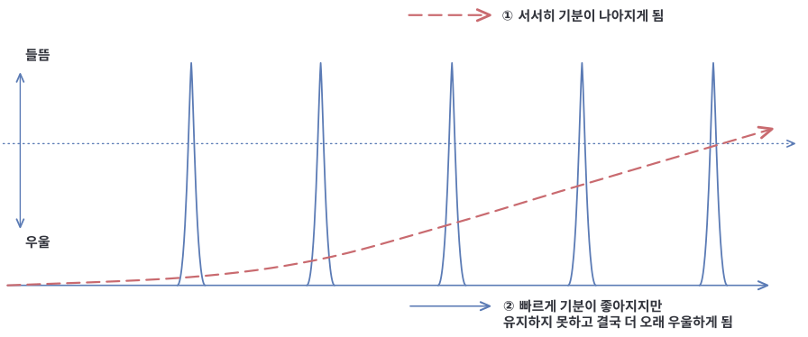
10. 기분증상과 동반될 수 있는 증상들
1) 양극성장애 및 양극성범주장애의 경과에서 보이는 다양한 증상들
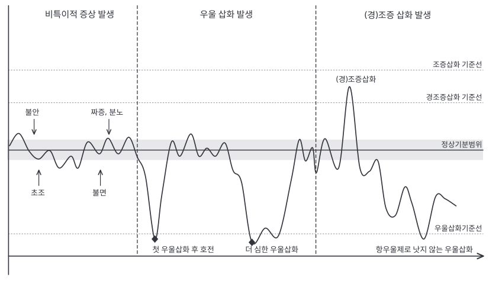
단순하고 전형적인 우울증과 달리, 양극성장애나 양극성범주장애 환자들은 질환의 경과 동안 다양한 공존 질환을 경험합니다. 첫 우울 삽화 이전에도 불안, 초조, 짜증, 분노, 불면 등의 증상이 흔히 나타나며, 이 시기에 공황장애, 분노조절장애, 불면증 등의 진단을 받는 경우도 적지 않습니다.
첫 우울 삽화는 소량의 항우울제에도 쉽게 호전되는 경우가 있지만, 곧 재발하며 시간이 지날수록 항우울제에 대한 반응이 감소하는 경향을 보입니다. 이후 항우울제 복용, 우울을 극복하려는 과도한 노력, 혹은 큰 스트레스 사건 등이 계기가 되어 (경)조증이 발현되기도 하며, 이후에는 항우울제가 오히려 증상을 악화시키는 우울 삽화를 경험하기도 합니다.
이러한 경과 속에서 공황발작을 비롯한 다양한 불안 증상, 알코올 의존, 자해, 폭식, 주의집중력 저하, 인지기능 장애 등이 동반되기도 하지만, 그 근본에는 기분조절의 어려움이 자리하고 있습니다.
그러나 많은 환자들이 이러한 기분조절 문제 자체보다는 겉으로 드러나는 증상에 초점을 맞춘 진단과 부적절한 약물 치료를 받음으로써 오히려 증상이 악화되는 경우가 흔합니다.
2) 공황발작, 과호흡, 광장공포증, 사회공포증
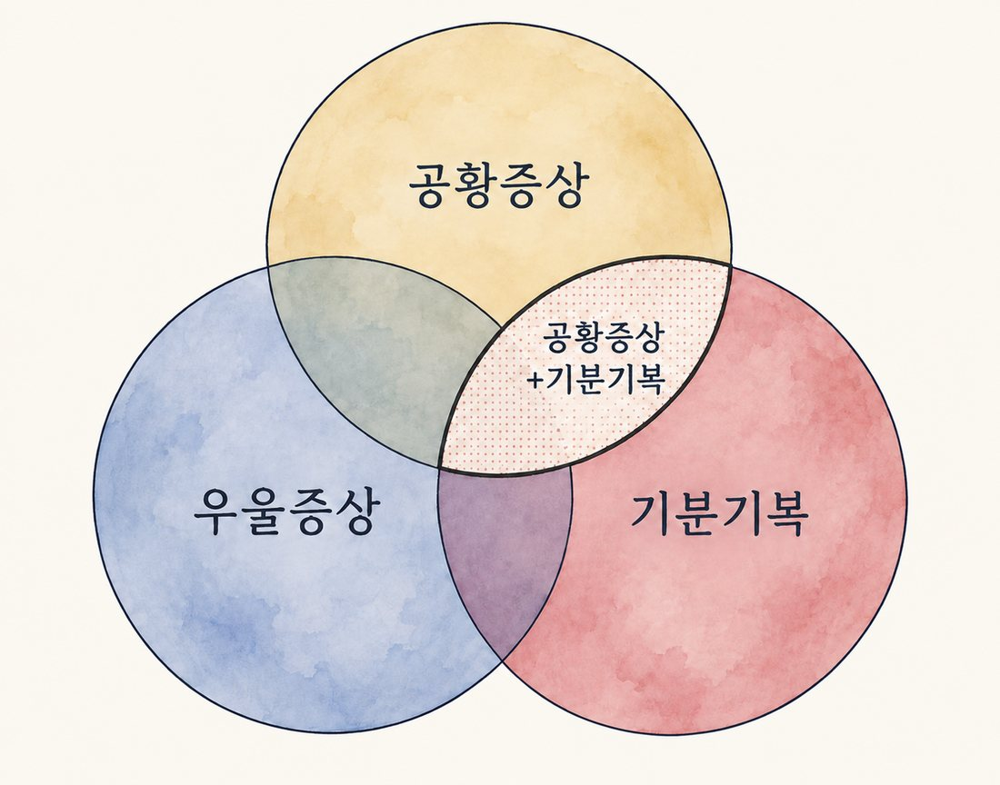
기분장애와 공황장애를 동시에 가지고 있는 분들이 상당히 많습니다. 공황장애의 치료에는 항우울제를 주로 사용합니다. 그러나 기분기복을 동반한 경우에는 먼저 기분기복을 치료하지 않으면 공황증상이 일시적으로는 호전되지만 다시 악화되거나, 증상이 지지부진하거나, 안정제를 끊지 못하고 계속 먹게 되는 경우가 있습니다. 그래서 공황증상이 있을 때에는 단순히 공황장애로 진단하는 것이 아니라 함께 있는 기분장애가 있는지 면밀히 살펴볼 필요가 있습니다. 공황발작은 매우 고통스러운 증상인 것은 사실이나, 본인이 느끼는 것만큼 죽음에 이르는 병은 아닙니다. 증상이 나타나면 당황하지 마시고, 의자에 앉거나 침대에 누워 편안한 자세로 천천히 깊게 호흡을 합니다. 처방 받은 항불안제를 복용하면 빠른 증상 호전에 도움이 됩니다. 또한, 증상이 있어도 ‘시간이 지나면 좋아질 거야’ 라고 스스로 안심시키는 것이 도움이 됩니다. 과호흡 때 숨이 쉬어지지 않는다고 느끼는 것은 실제로 숨이 안 쉬어지는 것이 아니라 너무 많은 숨을 쉬고 있기 때문에 체내 전해질의 불균형으로 뇌에서 그만 숨을 쉬라고 명령을 내리는 것이 숨이 안 쉬어지는 것처럼 느껴지기 때문입니다. 억지로 숨을 쉬려고 하지 말고 5초 동안 들이쉬고 10초를 내쉰다는 생각으로 천천히 호흡을 가다듬어보세요. 증상이 생기고 나면 숨을 천천히 쉬는 게 어렵습니다. 평소에 숨을 천천히 쉬는 연습을 해보는 것이 중요합니다. 이러한 공황증상을 동반하거나, 공황증상 없이 사람들이 많은 곳에 혼자 나가는 것이 두렵거나, 발표나 사람의 이목을 받는 것이 두려운 증상이 있을 수 있습니다. 그런 경우 기분장애가 나아지면서 점차 나아지는 경우도 있지만, 인지행동치료와 같은 상담치료가 필요할 수도 있습니다. 평소에 http://snumood.com 페이지 마지막에 있는 동영상을 보며 복식호흡과 근육이완을 연습해보세요.
3) 통증 및 신체 증상
우울, 불안, 분노 등의 심리적인 증상이 근육통증, 소화불량 등 다양한 신체증상으로 나타나는 경우가 있습니다. 약물치료를 통해 기분증상이 안정되면 이러한 신체증상이 호전되는 경우가 많지만, 신체를 직접적으로 이완해주는 것 역시 도움이 되기도 합니다. 규칙적인 운동(스트레칭, 요가, 필라테스 등), 마사지, 복식호흡, 바이오피드백 등이 도움이 되며, 특히 두피근육의 수축으로 발생하는 긴장성 두통 (압박감, 조이는 느낌, 또는 머리나 어깨를 짓누르는 느낌 등으로 나타나며 머리에 띠를 두른 듯한 둔하고 지속적인 두통)의 경우 직접적인 근육의 이완이 증상 완화에 도움이 됩니다. 머리, 목, 어깨 주변의 근육을 손이나 도구(경침, 마사지볼, 폼롤러, 지압기, 안마기 등)을 이용해서 풀어보세요.
4) 폭식
약물의 부작용으로 입맛이 당길 수도 있지만, 식욕 조절이 어려운 것은 기분장애 자체의 증상이기도 합니다. 흔하게 처방받아 사용하는 식욕조절제를 기분장애를 앓고 있는 사람이 사용하면 오히려 기분기복을 악화시키고, 결국 식욕 조절을 더욱 어렵게 할 수 있습니다. 식욕조절제를 사용하는 경우 반드시 담당 의사와 상의하고 선택해야 합니다. 분당서울대학교병원 가정의학과에서 운영하는 체중조절 프로그램에 방문하는 것도 좋은 방법입니다.
5) 자해/자살 충동
우울증 시기에 미래에 대한 부정적인 생각, 자책감, 무가치함 등으로 인해 자해 및 자살 충동이 동반되는 경우가 있습니다. 또한 감정 및 행동의 불안정으로 인하여 충동적으로 자해 및 자살 시도를 할 가능성도 있습니다. 이러한 경우 반드시 외래에 빨리 찾아오거나 응급실에 내원하셔서 의료진과 상의가 필요합니다. 응급실에 찾아오시면 정신과 의사를 만나실 수 있습니다. 입원하여 치료하는 경우 매일 약물을 조절할 수 있어 빠르게 맞는 약을 찾아 어려운 시기를 빠르게 극복하는데 도움이 될 수 있습니다. 병원에 오기 전까지 보호자들은 위험이 될 물건(날카로운 칼, 줄 등등)을 치워야 하고 환자의 말이나 행동에 대해 평가를 하거나 어떠한 행동을 취하는 것보다는 안정적으로 곁에 있어주며 환자의 이야기를 들어주고 얼마나 힘들었는지를 공감해주는 것이 중요합니다. 또한, 환자는 자해를 통해 즉각적인 관심을 받게 되며 관심을 받고 싶을 때마다 자해를 하는 경향이 있습니다. 따라서, 자해에서 벗어나도록 돕는 방법은 항상 일정하게 관심을 주며 안정적이고 따뜻한 태도를 일정하게 보여주는 것이 중요합니다.
6) 충동 및 분노조절의 어려움
경조증/조증 삽화에서는 기분이 들뜨거나 유쾌해지기도 하지만 짜증이 많아지고 화를 많이 내는 과민한 기분을 경험하며 실제로 물건을 던지고 부수거나, 가족이나 친구들에게 폭력을 휘둘러 법적인 문제가 발생하기도 합니다. 평소 자신이 어느 정도 화가 났는지를 0~10점 사이로 체크해보는 연습을 해봅시다. 화가 나서 감정 및 행동 조절이 되지 않을 때를 5점으로 정하여 점수가 5점 이상이 되면 다른 것을 생각하지 않고 화를 내게 된 상대방으로부터 빨리 다른 곳으로 벗어납시다. 분노가 발생하여 화가 정점에 이르는 시간은 대략 15초 정도 된다고 하며 15초를 잘 보내고 나면 감정들이 줄어들고 이성적으로 생각할 수 있습니다. 이후 점수가 2점 정도가 되면 내가 무슨 이유에서 화가 났는지를 곰곰이 생각해보면서 마음의 안정을 찾는 것이 좋습니다. 그리고 나서 상대방과 대화를 시도해봅시다.
7) 주의집중력 문제 (성인ADHD증상)
주의집중력 문제와 기분장애는 밀접한 관련이 있습니다. 많은 기분장애 환자들이 주의력 결핍 및 과잉행동장애 (ADHD)와 유사한 증상을 경험합니다. 그러나 기분장애로 인한 주의집중력 저하를 ADHD로 오인하고 약물치료를 하는 것은 바람직하지 않습니다. 기분장애 환자의 경우, 우울과 불안 등의 기분 문제가 먼저 안정화되어야 합니다. 왜냐하면 기분 불안정 상태에서는 ADHD 약물치료만으로는 주의집중력 개선 효과가 미미할 수 있기 때문입니다. 기분장애로 인한 인지기능 저하, 동기 부족, 에너지 저하 등이 주의집중력 문제의 원인이 될 수 있습니다. 따라서 기분장애 치료를 통해 기분이 안정화된 후에야 비로소 남아있는 주의집중력 문제를 평가할 수 있습니다. 이때 종합적인 평가를 통해 주의력 결핍이 지속된다면 ADHD 진단 및 약물치료를 고려할 수 있습니다. 기분장애의 증상을 ADHD로 오인하고 과도한 약물을 복용하게 되는 경우 오히려 기분기복을 악화시킬 수 있는 점을 유념해야 합니다.
8) 기분장애와 치매
우울 삽화를 반복해서 겪는 경우 치매 위험이 높아진다고 알려져 있습니다. 아직까지 우울증 자체가 치매를 일으키는 것인지는 명확하게 밝혀지진 않았지만, 우울한 시기가 길어지면 활동량이 줄어들고, 안 좋은 생활습관이 늘고, 두뇌를 쓰는 일도 줄어들면서 치매 위험이 늘어날 것이라고 생각됩니다. 많은 환자들이 “우울증 자체가 치매의 위험을 높이는 것”을 “우울증 약물이 치매 위험을 높인다”고 잘못 생각하고, 약을 임의로 끊어 더 치매 위험이 높아지도록 하는 실수를 합니다. 기분장애 약물은 적절히 잘 복용하면 우울증의 재발을 막고, 오히려 뇌 건강에 도움이 될 수 있습니다. 치매가 걱정된다면 아래 “치매를 예방하는 생활 습관”을 꾸준하게 지켜보세요.
<치매를 예방하는 생활습관>
- (1) 뇌가 건강해지는 운동을 생활화하기: 숨차고 땀나는 운동을 일주일에 3회 이상 하세요. 걷기를 자주 하세요. 관절이 안 좋을 때 할 수 있는 운동 (수영, 자전거, 공중자전거, 물속에서 걷기). 추울 때에는 따뜻하게 입고 급하지 않게 운동을 나가야 합니다. 매일 운동하는 사람은 치매 위험을 80%를 낮출 수 있습니다.
- (2) 뇌가 건강해지는 식사를 생활화하기: 단 음식을 피하세요. 믹스커피, 미숫가루, 단 음료수, 탄산음료를 피하세요. 생선, 채소, 과일, 우유, 견과류를 드세요. 물을 충분히 드세요. 비만이 되지 않게 체중 조절을 하세요. 기름진 육류 선호 시 채식 선호에 비해 치매 위험 3배, 비만인 사람은 정상체중에 비해 치매 발생 1.8배 늘어납니다.
- (3) 당뇨, 고혈압, 고지혈증, 부정맥 관리: 이 질환에 대한 치료 약물을 꾸준히 매일 잘 드셔야 합니다.
- (4) 뇌의 활동을 돕는 활발한 사회활동을 하기: 친구를 많이 사귀세요. 친척과 친구를 한 달에 한번 이상 자주 만나세요. 혼자 지내면 치매 가능성 1.5배 증가하고, 단체 활동하면 치매 확률 20% 낮춥니다.
- (5) 뇌의 활동을 돕는 공부를 하기: 독서를 많이 하세요. 하루에 20분씩, 소리 내서 책을 읽으세요. 산수 공부를 하세요. 독서를 하면 인지장애 위험을 20% 낮추고 두뇌활동을 하면 인지장애 가능성 30%이상 낮춥니다
- (6) 뇌가 나빠지지 않게 금연을 하기: 담배를 멀리하고 지금 당장 끊으세요. 과거에 흡연을 했어도 담배를 끊고 6년이 지나면 치매에 걸릴 확률이 41%가 감소합니다.
- (7) 뇌가 나빠지지 않게 절주를 하기: 과음을 삼가세요. 술을 많이 마시면 전두엽이 손상됩니다. 충동적이고 화를 잘 내고 무계획적인 사람이 됩니다
- (8) 기분장애 치료제를 잘 드세요. 기분장애가 재발할수록 치매 위험이 늘어날 수 있습니다.